SD5979 / 原课件 · 中英对照
L07 · 逐页中英对照讲义
07 Σ SD5979 Correlations 2026 10 09.pdf · 共 66 页 · 左侧保留老师英文原图与原版式，右侧逐页中文对照，研究课相关词汇已加粗高亮并括号标注原英语。

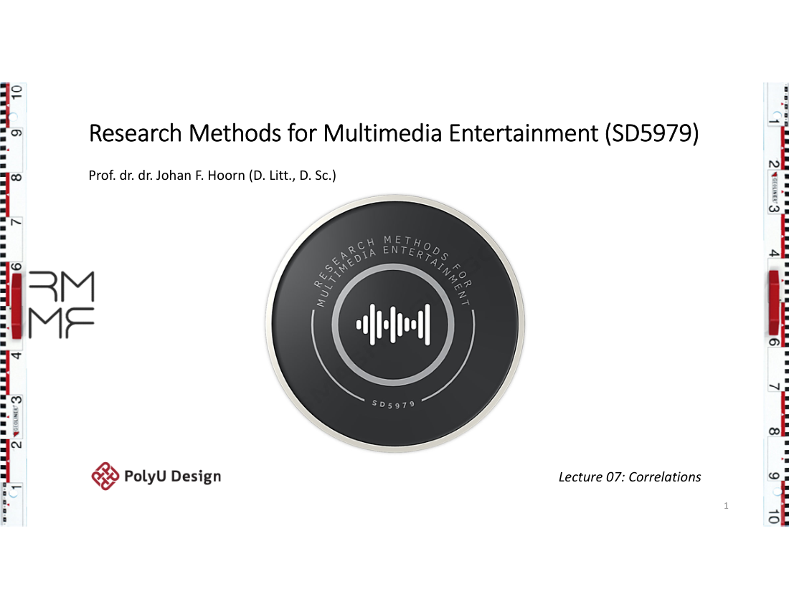
多媒体娱乐研究方法（SD5979）
Prof. dr. dr. Johan F. Hoorn (D. Litt., D. Sc.)
第 07 讲：相关（Correlations）
英文检索原文（公式与版式请看左侧原图）
Research Methods for Multimedia Entertainment (SD5979) Prof. dr. dr. Johan F. Hoorn (D. Litt., D. Sc.) Lecture 07: Correlations 1

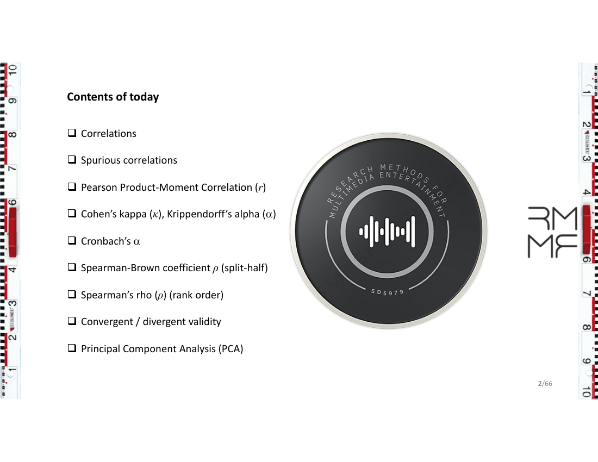
今日内容（Contents of today）
- 相关（Correlations）
- 伪相关（Spurious correlations）
- 皮尔逊积矩相关（Pearson Product-Moment Correlation (r)）
- 科恩 kappa（Cohen’s kappa (κ)），克里彭多夫 alpha（Krippendorff’s alpha (α)）
- 克龙巴赫 α（Cronbach’s α）
- 斯皮尔曼-布朗系数 ρ（分半）（Spearman-Brown coefficient ρ (split-half)）
- 斯皮尔曼 rho（等级顺序）（Spearman’s rho (ρ) (rank order)）
- 聚合效度／区分效度（Convergent / divergent validity）
- 主成分分析（Principal Component Analysis (PCA)）
英文检索原文（公式与版式请看左侧原图）
Contents of today Correlations Spurious correlations Pearson Product-Moment Correlation (r) Cohen’s kappa (κ), Krippendorff’s alpha () Cronbach’s Spearman-Brown coefficient ρ (split-half) Spearman’s rho (ρ) (rank order) Convergent / divergent validity Principal Component Analysis (PCA) 2/66

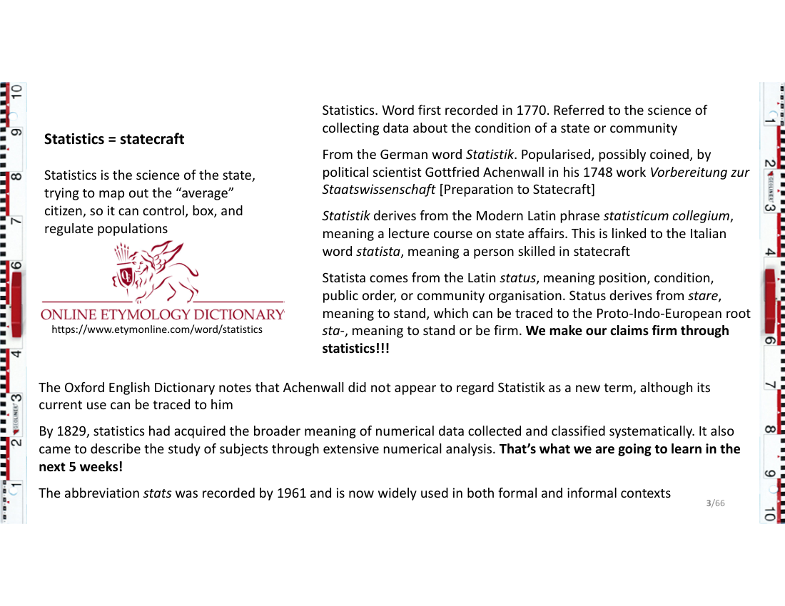
https://www.etymonline.com/word/statistics
统计学（Statistics）。该词首次见于记载是在 1770 年，指关于收集国家或社区状况数据的科学。
源自德语词 Statistik。由政治学家 Gottfried Achenwall 在其 1748 年的著作 Vorbereitung zur Staatswissenschaft《治国术导论》（Preparation to Statecraft）中推广，也可能由其创造。
Statistik 源于现代拉丁语短语 statisticum collegium，意为「关于国家事务的讲义课程」。这与意大利语词 statista 相关，后者指精于治国之道的人。
Statista 源自拉丁语 status，意为「地位、状况、公共秩序或社区组织」。Status 源自 stare，意为「站立」，可追溯至原始印欧语词根 sta-，意为「站立或稳固」。我们通过统计学（statistics）让自己的论断变得稳固！！！
统计学（Statistics） = 治国之术（statecraft）
统计学（Statistics）是关于国家的科学，试图勾勒出「平均（average）」公民的画像，从而对人口进行控制、归类与规训。
《牛津英语词典》（Oxford English Dictionary）指出，Achenwall 似乎并未将 Statistik 视为一个新词，尽管该词如今的用法可以追溯到他。
到 1829 年，统计学（statistics）获得了更广泛的含义，指代系统收集并分类的数值数据（numerical data）。它也开始用来描述通过大量数值分析（numerical analysis）对各学科展开的研究。这正是我们接下来 5 周要学习的内容！
缩写词 stats 在 1961 年已有记载，如今在正式和非正式语境中都被广泛使用。
英文检索原文（公式与版式请看左侧原图）
3/66 https://www.etymonline.com/word/statistics Statistics. Word first recorded in 1770. Referred to the science of collecting data about the condition of a state or community From the German word Statistik. Popularised, possibly coined, by political scientist Gottfried Achenwall in his 1748 work Vorbereitung zur Staatswissenschaft [Preparation to Statecraft] Statistik derives from the Modern Latin phrase statisticum collegium, meaning a lecture course on state affairs. This is linked to the Italian word statista, meaning a person skilled in statecraft Statista comes from the Latin status, meaning position, condition, public order, or community organisation. Status derives from stare, meaning to stand, which can be traced to the Proto-Indo-European root sta-, meaning to stand or be firm. We make our claims firm through statistics!!! Statistics = statecraft Statistics is the science of the state, trying to map out the “average” citizen, so it can control, box, and regulate populations The Oxford English Dictionary notes that Achenwall did not appear to regard Statistik as a new term, although its current use can be traced to him By 1829, statistics had acquired the broader meaning of numerical data collected and classified systematically. It also came to describe the study of subjects through extensive numerical analysis. That’s what we are going to learn in the next 5 weeks! The abbreviation stats was recorded by 1961 and is now widely used in both formal and informal contexts

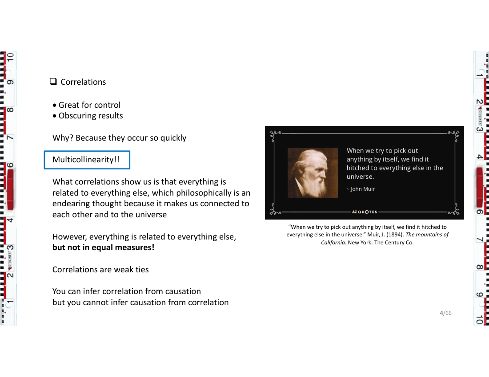
相关（Correlations）
- 非常适合用于控制（control）
- 会掩盖结果
为什么？因为它们出现得太快、太容易了
多重共线性（Multicollinearity）！！
相关（correlations）向我们揭示的是：万物皆相互关联；从哲学上讲，这是一个令人倍感温暖的想法，因为它让我们彼此相连，也与整个宇宙相连。
然而，万物虽然皆相互关联，但关联的程度并不相同！
相关（Correlations）是弱联系（weak ties）
你可以从因果关系（causation）推断出相关（correlation），但不能从相关（correlation）推断出因果关系（causation）。
「当我们试图单独挑出任何事物时，就会发现它与宇宙中的其他一切事物都拴在一起。」Muir, J. (1894). The mountains of California. New York: The Century Co.
英文检索原文（公式与版式请看左侧原图）
Correlations Great for control Obscuring results Why? Because they occur so quickly Multicollinearity!! What correlations show us is that everything is related to everything else, which philosophically is an endearing thought because it makes us connected to each other and to the universe However, everything is related to everything else, but not in equal measures! Correlations are weak ties You can infer correlation from causation but you cannot infer causation from correlation 4/66 “When we try to pick out anything by itself, we find it hitched to everything else in the universe.” Muir, J. (1894). The mountains of California. New York: The Century Co.

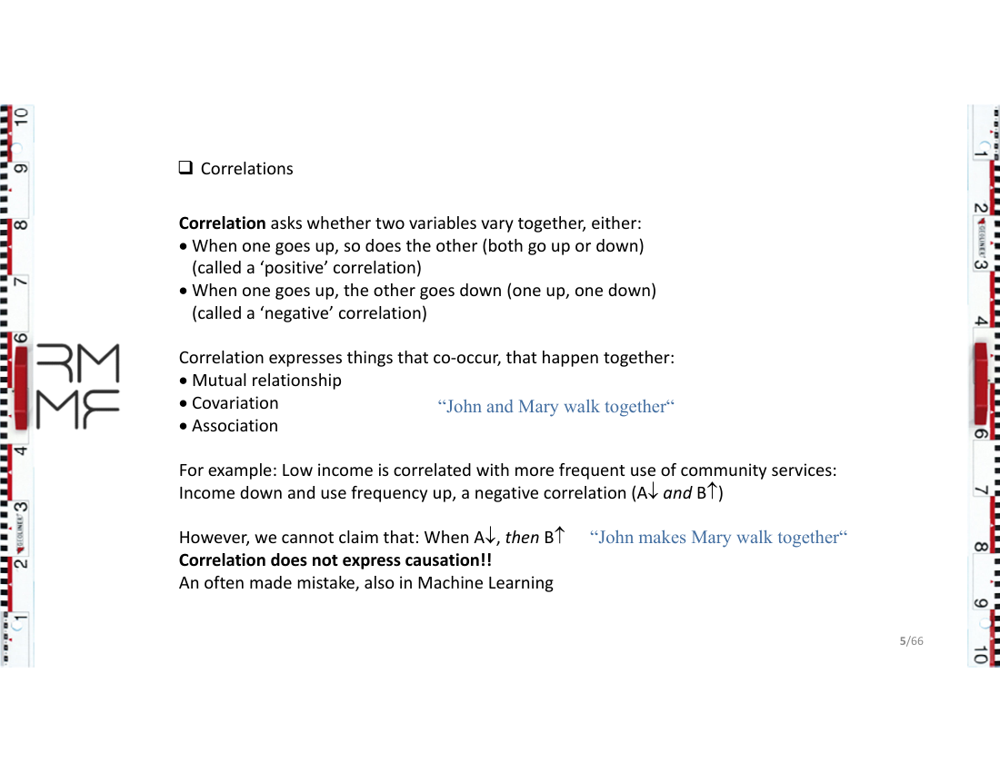
相关（Correlations）
相关（Correlation）探讨的是两个变量（variables）是否一同变化，具体有两种情况：
- 当一个上升时，另一个也随之上升（两者同升或同降）（称为「正相关（positive correlation）」）
- 当一个上升时，另一个却下降（一升一降）（称为「负相关（negative correlation）」）
相关（Correlation）表达的是共同出现、同时发生的事物：
- 相互关系（Mutual relationship）
- 共变（Covariation）
- 关联（Association）
例如：低收入与更频繁地使用社区服务相关：
收入下降而使用频率上升，这是一种负相关（negative correlation）（A 与 B）
然而，我们不能宣称：只要有 A，就会有 B
相关（Correlation）并不表达因果关系（causation）！！
这是一个常犯的错误，在机器学习（Machine Learning）中亦然
「John 和 Mary 一起走」
「John 使 Mary 一起走」
英文检索原文（公式与版式请看左侧原图）
Correlation asks whether two variables vary together, either: When one goes up, so does the other (both go up or down) (called a ‘positive’ correlation) When one goes up, the other goes down (one up, one down) (called a ‘negative’ correlation) Correlation expresses things that co-occur, that happen together: Mutual relationship Covariation Association For example: Low income is correlated with more frequent use of community services: Income down and use frequency up, a negative correlation (Aand B) However, we cannot claim that: When A, then B Correlation does not express causation!! An often made mistake, also in Machine Learning Correlations “John and Mary walk together“ “John makes Mary walk together“ 5/66

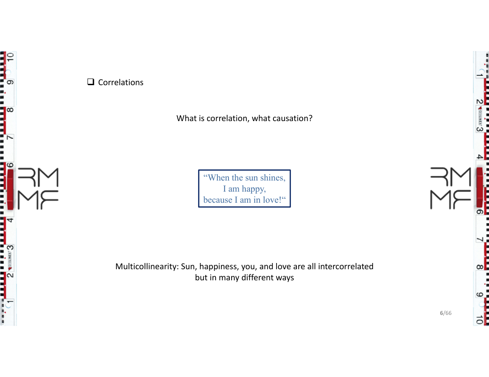
相关（Correlations）
「当阳光灿烂时，我感到很快乐，因为我正在恋爱！」
其中什么是相关（correlation），什么是因果关系（causation）？
多重共线性（Multicollinearity）：阳光、快乐、你以及爱全都是相互相关（intercorrelated）的，但方式各不相同。
英文检索原文（公式与版式请看左侧原图）
“When the sun shines, I am happy, because I am in love!“ What is correlation, what causation? Correlations 6/66 Multicollinearity: Sun, happiness, you, and love are all intercorrelated but in many different ways

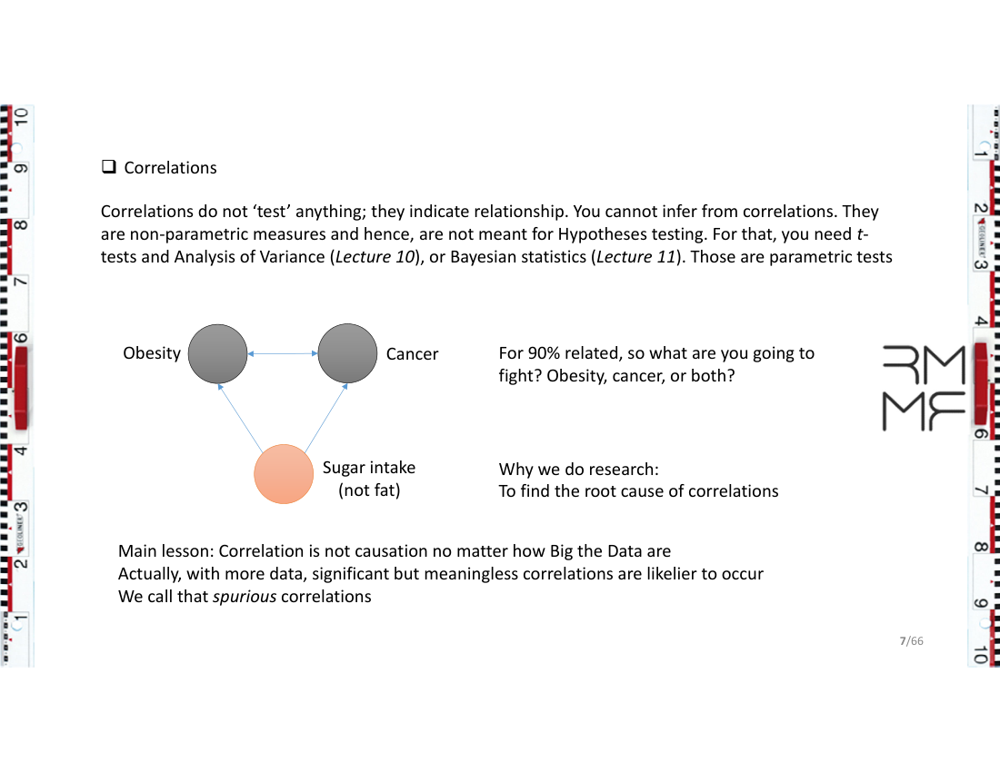
相关（Correlations）
核心结论（Main lesson）：无论大数据（Big Data）有多大，相关（Correlation）都不等于因果关系（causation）
事实上，数据越多，显著（significant）但毫无意义的相关（correlations）就越容易出现
我们称之为伪相关（spurious correlations）
- 肥胖（Obesity）
- 癌症（Cancer）
- 糖分摄入（而非脂肪）（Sugar intake (not fat)）
- 两者有 90% 相关，那你要对抗哪一个？肥胖、癌症，还是两者都要？
我们为什么做研究：
为了找到相关（correlations）背后的根本原因（root cause）
相关（Correlations）并不「检验」任何东西；它们只是表明关系。你无法从相关（correlations）中进行推断（infer）。它们属于非参数测量（non-parametric measures），因此不用于假设检验（Hypotheses testing）。要进行假设检验，你需要使用 t 检验（t-tests） 和方差分析（Analysis of Variance）（第 10 讲），或贝叶斯统计（Bayesian statistics）（第 11 讲）。那些才是参数检验（parametric tests）。
英文检索原文（公式与版式请看左侧原图）
Correlations Main lesson: Correlation is not causation no matter how Big the Data are Actually, with more data, significant but meaningless correlations are likelier to occur We call that spurious correlations Obesity Cancer Sugar intake (not fat) For 90% related, so what are you going to fight? Obesity, cancer, or both? Why we do research: To find the root cause of correlations Correlations do not ‘test’ anything; they indicate relationship. You cannot infer from correlations. They are non-parametric measures and hence, are not meant for Hypotheses testing. For that, you need t- tests and Analysis of Variance (Lecture 10), or Bayesian statistics (Lecture 11). Those are parametric tests 7/66

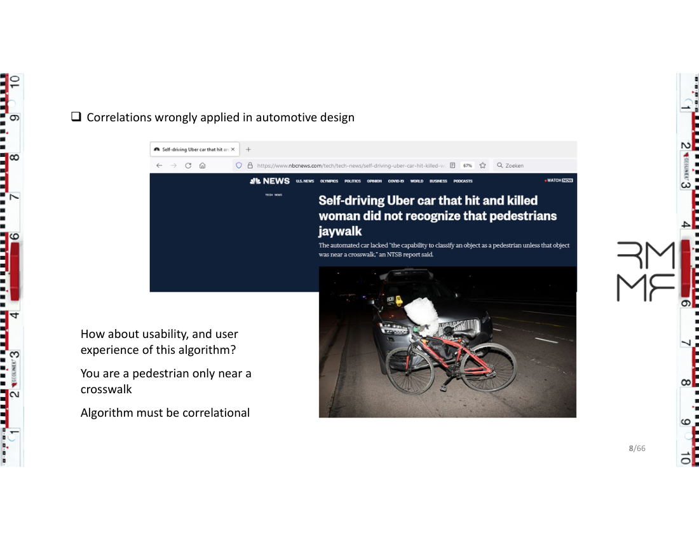
相关（Correlations）在汽车设计中的错误应用
该算法的可用性（usability）和用户体验（user experience）如何？
只有在人行横道附近时，你才被识别为行人
该算法一定是基于相关（correlational）的
英文检索原文（公式与版式请看左侧原图）
How about usability, and user experience of this algorithm? You are a pedestrian only near a crosswalk Algorithm must be correlational Correlations wrongly applied in automotive design 8/66

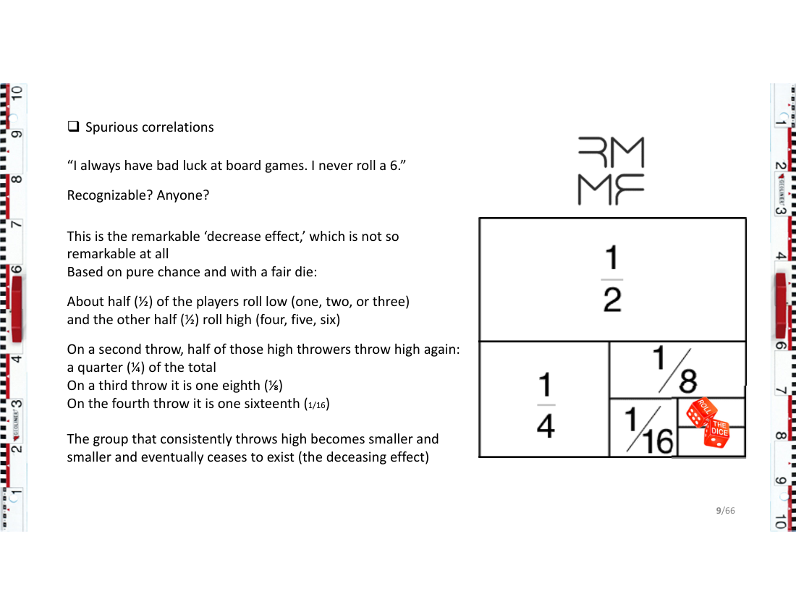
伪相关（Spurious correlations）
「我玩桌游总是手气很差。我从来都掷不出 6。」
有同感吗？有人这样觉得吗？
这就是引人注目的「递减效应（decrease effect）」，其实它一点也不神奇
基于纯随机概率（chance）并使用一枚均匀的骰子：
- 大约一半（½）的玩家会掷出小点数（1、2 或 3），而另一半（½）会掷出大点数（4、5 或 6）
- 在第二次投掷时，之前掷出大点数的人中有一半会再次掷出大点数：占总人数的四分之一（¼）
- 在第三次投掷时，这一比例是八分之一（⅛）
- 在第四次投掷时，这一比例是十六分之一（1/16）
持续掷出大点数的群体变得越来越小，最终不复存在（即递减效应（deceasing effect））
英文检索原文（公式与版式请看左侧原图）
Spurious correlations “I always have bad luck at board games. I never roll a 6.” Recognizable? Anyone? This is the remarkable ‘decrease effect,’ which is not so remarkable at all Based on pure chance and with a fair die: About half (½) of the players roll low (one, two, or three) and the other half (½) roll high (four, five, six) On a second throw, half of those high throwers throw high again: a quarter (¼) of the total On a third throw it is one eighth (⅛) On the fourth throw it is one sixteenth (1/16) The group that consistently throws high becomes smaller and smaller and eventually ceases to exist (the deceasing effect) 9/66

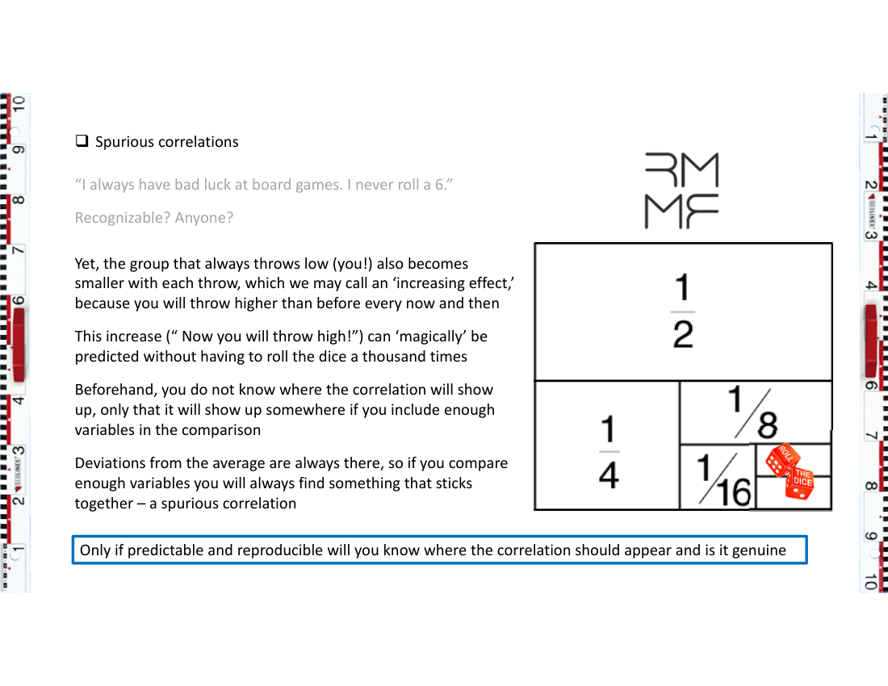
伪相关（Spurious correlations）
「我玩桌游总是手气很差。我从来都掷不出 6。」
有同感吗？有人这样觉得吗？
然而，总是掷出小点数的群体（也就是你！）同样会随着每次投掷而越来越小，我们可以称之为「递增效应（increasing effect）」，因为你时不时会掷出比之前更高的点数
这种上升（「现在你要掷出大点数了！」）无需把骰子掷上一千次，就能被「神奇地」预测出来
事先你并不知道相关（correlation）会出现在哪里，只知道如果你在比较中纳入了足够多的变量（variables），它总会出现在某个地方
对平均值（average）的偏离（Deviations）总是存在的，因此如果你比较足够多的变量（variables），就总会发现某些粘连在一起的东西——即一种伪相关（spurious correlation）
只有当相关（correlation）是可预测的（predictable）且可重复的（reproducible）时，你才会知道它应该出现在哪里，也才能确定它是真实的
英文检索原文（公式与版式请看左侧原图）
Spurious correlations “I always have bad luck at board games. I never roll a 6.” Recognizable? Anyone? Yet, the group that always throws low (you!) also becomes smaller with each throw, which we may call an ‘increasing effect,’ because you will throw higher than before every now and then This increase (“ Now you will throw high!”) can ‘magically’ be predicted without having to roll the dice a thousand times Beforehand, you do not know where the correlation will show up, only that it will show up somewhere if you include enough variables in the comparison Deviations from the average are always there, so if you compare enough variables you will always find something that sticks together – a spurious correlation Only if predictable and reproducible will you know where the correlation should appear and is it genuine

相关（Correlations）
一般来说，相关（correlations）的取值通常在 -1.00 到 +1.00 之间
+1 → 两个变量（variables）之间存在完全正线性关系（positive linear relationship）
0 → 变量（variables）之间不存在线性关系（linear relationship）
-1 → 完全负线性关系（negative linear relationship）
- x 轴（x-axis）
- y 轴（y-axis）
- 用户体验（User experience）
- 类人性（Human-likeness）
- 正相关（Positive）？
- 无相关（No correlation）？
- 负相关（Negative）？
英文检索原文（公式与版式请看左侧原图）
In general, correlations usually take on values between -1.00 and +1.00 +1 a perfect positive linear relationship between two variables 0 no linear relationship between variables ‐1 a perfect negative linear relationship x-axis y-axis User experience Human-likeness Positive? No correlation? Negative? Correlations 11/66

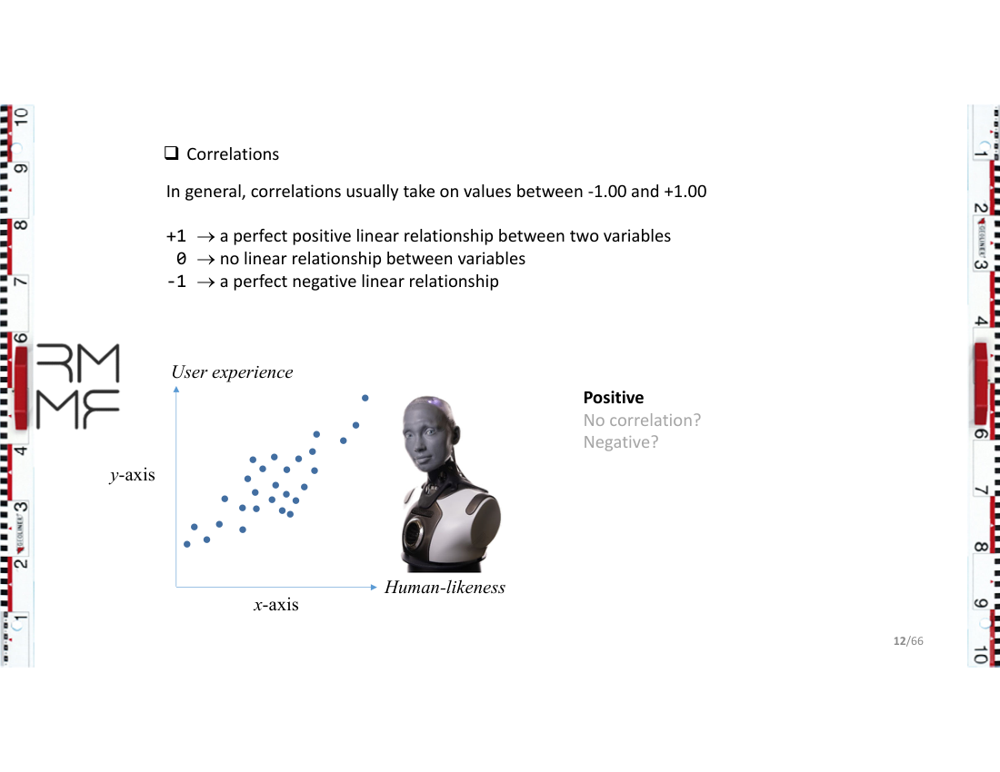
相关（Correlations）
一般来说，相关（correlations）的取值通常在 -1.00 到 +1.00 之间
+1 → 两个变量（variables）之间存在完全正线性关系（positive linear relationship）
0 → 变量（variables）之间不存在线性关系（linear relationship）
-1 → 完全负线性关系（negative linear relationship）
- x 轴（x-axis）
- y 轴（y-axis）
- 用户体验（User experience）
- 类人性（Human-likeness）
- 正相关（Positive）
- 无相关（No correlation）？
- 负相关（Negative）？
英文检索原文（公式与版式请看左侧原图）
In general, correlations usually take on values between -1.00 and +1.00 +1 a perfect positive linear relationship between two variables 0 no linear relationship between variables ‐1 a perfect negative linear relationship x-axis y-axis User experience Human-likeness Positive No correlation? Negative? Correlations 12/66

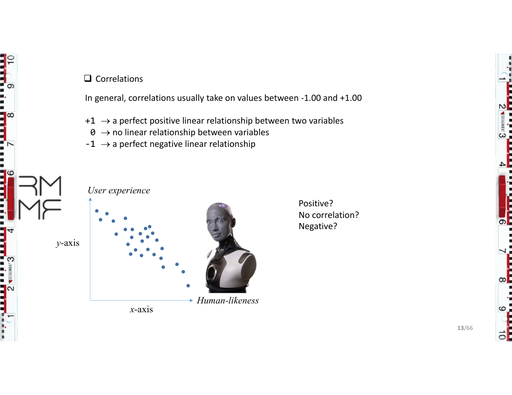
相关（Correlations）
一般来说，相关（correlations） 的取值通常介于 -1.00 和 +1.00 之间
- +1 → 两个变量（variables）之间存在完全正线性关系（perfect positive linear relationship）
- 0 → 变量（variables）之间无线性关系（no linear relationship）
- -1 → 完全负线性关系（perfect negative linear relationship）
图表标注：
- x 轴（
x-axis）：类人性（Human-likeness） - y 轴（
y-axis）：用户体验（User experience） - 散点图判断选项：正相关（Positive）？ / 无相关（No correlation）？ / 负相关（Negative）？
英文检索原文（公式与版式请看左侧原图）
In general, correlations usually take on values between -1.00 and +1.00 +1 a perfect positive linear relationship between two variables 0 no linear relationship between variables ‐1 a perfect negative linear relationship x-axis y-axis User experience Human-likeness Positive? No correlation? Negative? Correlations 13/66

相关（Correlations）
一般来说，相关（correlations） 的取值介于 -1.00 和 +1.00 之间
- +1 → 两个变量（variables）之间存在完全正线性关系（perfect positive linear relationship）
- 0 → 变量（variables）之间无线性关系（no linear relationship）
- -1 → 完全负线性关系（perfect negative linear relationship）
图表标注：
- x 轴（
x-axis）：类人性（Human-likeness） - y 轴（
y-axis）：用户体验（User experience） - 散点图判断：正相关（Positive）？ / 无相关（No correlation）？ / 负相关（Negative）
英文检索原文（公式与版式请看左侧原图）
In general, correlations take on values between -1.00 and +1.00 +1 a perfect positive linear relationship between two variables 0 no linear relationship between variables ‐1 a perfect negative linear relationship x-axis y-axis User experience Human-likeness Positive? No correlation? Negative Correlations 14/66

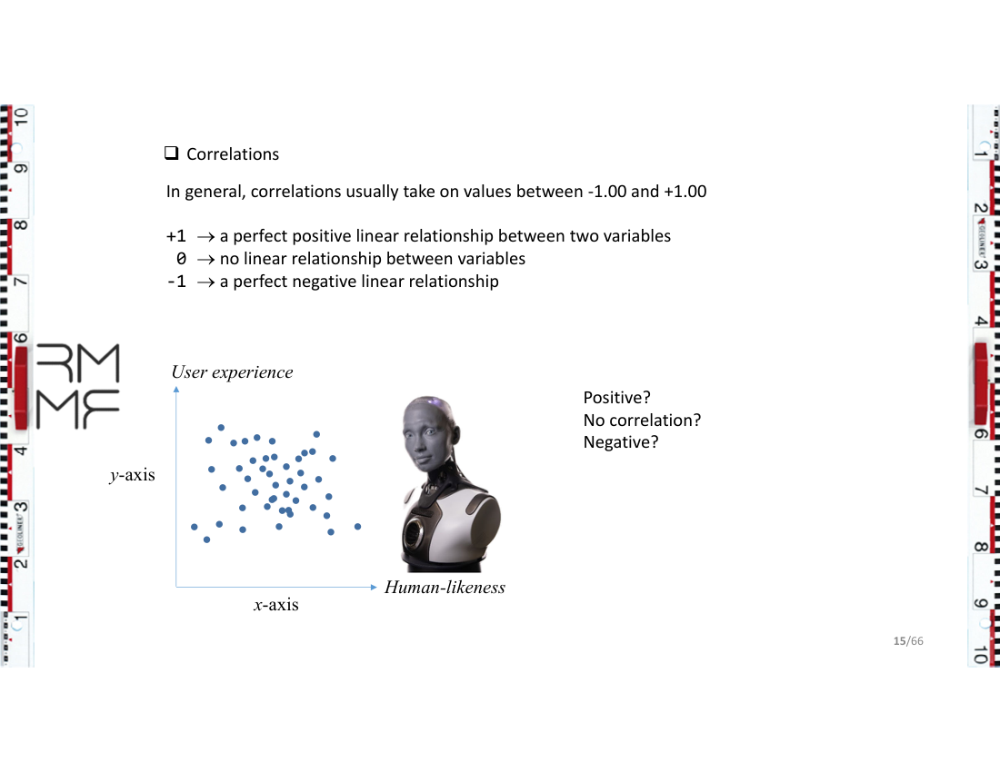
相关（Correlations）
一般来说，相关（correlations） 的取值通常介于 -1.00 和 +1.00 之间
- +1 → 两个变量（variables）之间存在完全正线性关系（perfect positive linear relationship）
- 0 → 变量（variables）之间无线性关系（no linear relationship）
- -1 → 完全负线性关系（perfect negative linear relationship）
图表标注：
- x 轴（
x-axis）：类人性（Human-likeness） - y 轴（
y-axis）：用户体验（User experience） - 散点图判断选项：正相关（Positive）？ / 无相关（No correlation）？ / 负相关（Negative）？
英文检索原文（公式与版式请看左侧原图）
In general, correlations usually take on values between -1.00 and +1.00 +1 a perfect positive linear relationship between two variables 0 no linear relationship between variables ‐1 a perfect negative linear relationship x-axis y-axis User experience Human-likeness Positive? No correlation? Negative? Correlations 15/66

相关（Correlations）
一般来说，相关（correlations） 的取值通常介于 -1.00 和 +1.00 之间
- +1 → 两个变量（variables）之间存在完全正线性关系（perfect positive linear relationship）
- 0 → 变量（variables）之间无线性关系（no linear relationship）
- -1 → 完全负线性关系（perfect negative linear relationship）
图表标注：
- x 轴（
x-axis）：类人性（Human-likeness） - y 轴（
y-axis）：用户体验（User experience） - 散点图判断：正相关（Positive）？ / 无相关（No correlation） / 负相关（Negative）？
英文检索原文（公式与版式请看左侧原图）
In general, correlations usually take on values between -1.00 and +1.00 +1 a perfect positive linear relationship between two variables 0 no linear relationship between variables ‐1 a perfect negative linear relationship x-axis y-axis User experience Human-likeness Positive? No correlation Negative? Correlations 16/66

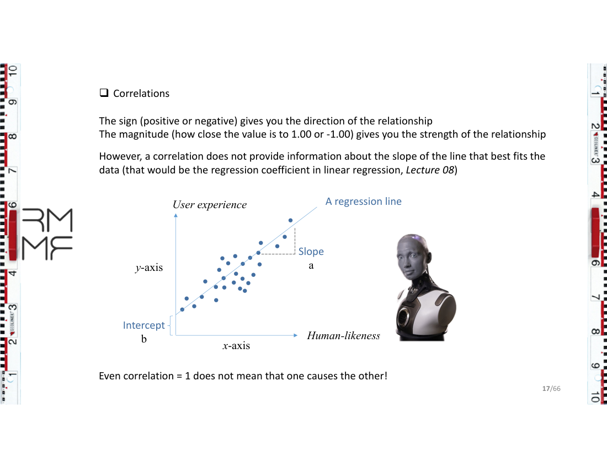
相关（Correlations）
- 符号（正或负）给出了关系的方向（direction）
- 数值大小（数值有多接近 1.00 或 -1.00）给出了关系的强度（strength）
- 然而，相关（correlation） 并不能提供最拟合数据直线的斜率（slope）信息（那属于线性回归（linear regression）中的回归系数（regression coefficient），见第 08 讲）
图表标注：
- x 轴（
x-axis）：类人性（Human-likeness） - y 轴（
y-axis）：用户体验（User experience） - 一条回归线（regression line）
- 斜率（Slope） a
- 截距（Intercept） b
- 即使相关（correlation） = 1，也并不意味着一者会导致（causes）另一者！
英文检索原文（公式与版式请看左侧原图）
The sign (positive or negative) gives you the direction of the relationship The magnitude (how close the value is to 1.00 or -1.00) gives you the strength of the relationship However, a correlation does not provide information about the slope of the line that best fits the data (that would be the regression coefficient in linear regression, Lecture 08) Correlations x-axis y-axis User experience A regression line Slope a Intercept b Even correlation = 1 does not mean that one causes the other! Human-likeness 17/66

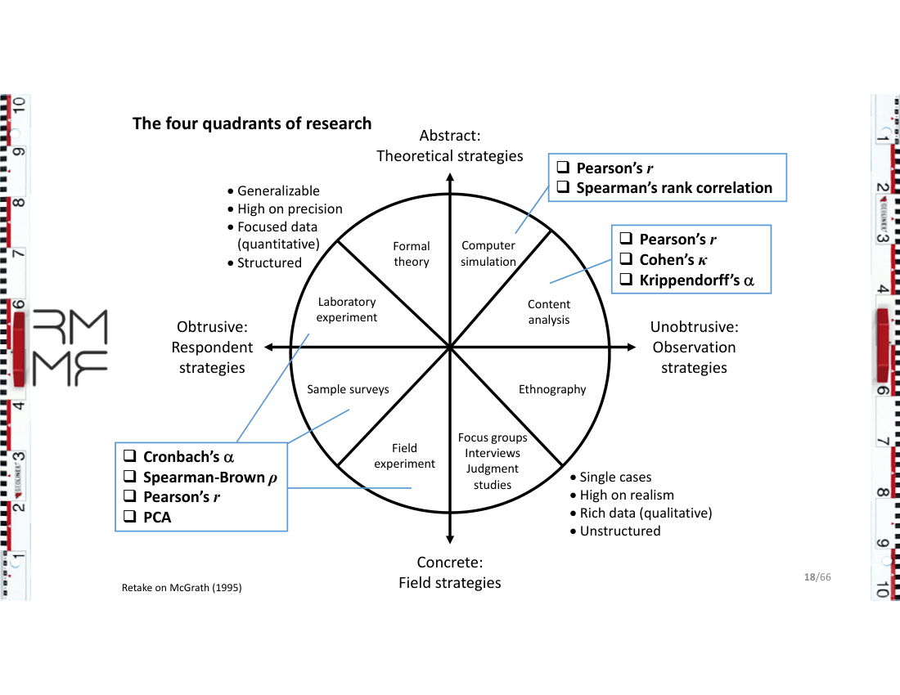
研究的四个象限（The four quadrants of research）
改编自 McGrath (1995)
- 维度划分：
- 具体（Concrete）：实地策略（Field strategies）
- 抽象（Abstract）：理论策略（Theoretical strategies）
- 介入性（Obtrusive）：受访者策略（Respondent strategies）
- 非介入性（Unobtrusive）：观察策略（Observation strategies）
- 各象限的研究方法：
- 实验室实验（Laboratory experiment）
- 抽样调查（Sample surveys）
- 形式理论（Formal theory）
- 计算机模拟（Computer simulation）
- 民族志（Ethnography）
- 内容分析（Content analysis）
- 实地实验（Field experiment）
- 焦点小组（Focus groups）
- 访谈（Interviews）
- 判断研究（Judgment studies）
- 方法特征对比：
- 单一个案（Single cases）
- 高现实性（realism）
- 丰富数据（质性（qualitative））
- 非结构化（Unstructured）
- 具有可推广性（Generalizable）
- 高精确度（precision）
- 聚焦数据（量化（quantitative））
- 结构化（Structured）
- 对应统计与分析方法：
- 皮尔逊 r（Pearson’s r）
- 科恩 κ（Cohen’s κ）
- 克里彭多夫 α（Krippendorff’s α）
- 克龙巴赫 α（Cronbach’s α）
- 斯皮尔曼-布朗系数 ρ（Spearman-Brown ρ）
- 皮尔逊 r（Pearson’s r）
- 主成分分析（PCA）
- 皮尔逊 r（Pearson’s r）
- 斯皮尔曼等级相关（Spearman’s rank correlation）
英文检索原文（公式与版式请看左侧原图）
The four quadrants of research Concrete: Field strategies Abstract: Theoretical strategies Laboratory experiment Sample surveys Obtrusive: Respondent strategies Unobtrusive: Observation strategies Formal theory Computer simulation Ethnography Content analysis Field experiment Focus groups Interviews Judgment studies Single cases High on realism Rich data (qualitative) Unstructured Generalizable High on precision Focused data (quantitative) Structured Retake on McGrath (1995) Pearson’s r Cohen’s κ Krippendorff’s Cronbach’s Spearman-Brown ρ Pearson’s r PCA Pearson’s r Spearman’s rank correlation 18/66

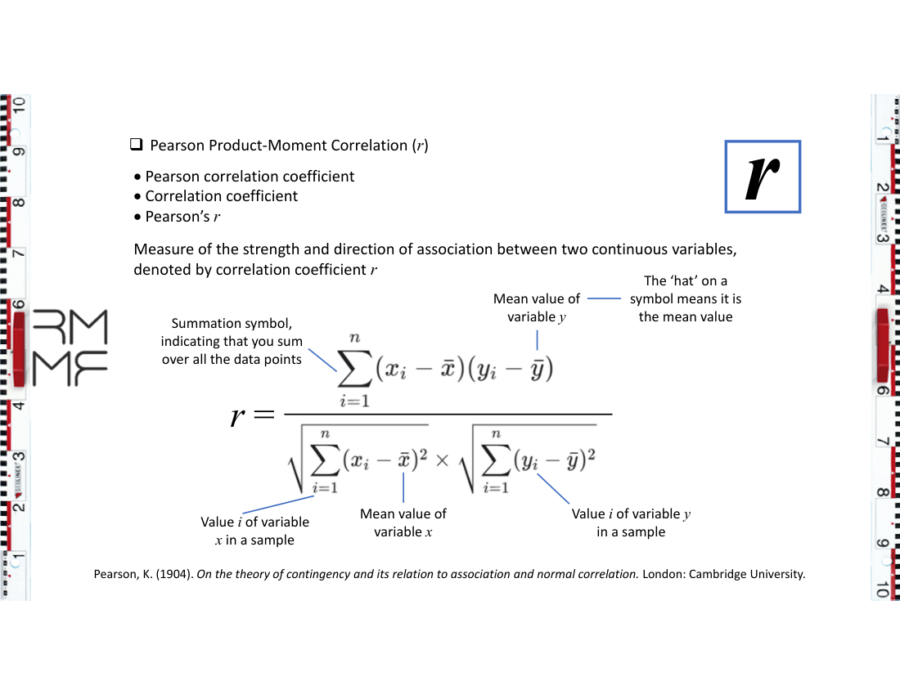
皮尔逊积矩相关（Pearson Product-Moment Correlation (r)）
- 皮尔逊相关系数（Pearson correlation coefficient）
- 相关系数（Correlation coefficient）
- 皮尔逊 r（Pearson’s r）
用于衡量两个连续变量（continuous variables）之间关联的强度（strength）与方向（direction），以相关系数（correlation coefficient） r 表示。
公式（r =）各部分标注：
- 求和符号（Summation symbol），表示对所有数据点进行求和
- 符号上的「尖帽」（hat）表示它是均值（mean value）
- 变量（variable） y 的均值（Mean value）
- 样本（sample）中变量（variable） x 的第 i 个值
- 样本（sample）中变量（variable） y 的第 i 个值
- 变量（variable） x 的均值（Mean value）
参考文献：Pearson, K. (1904). On the theory of contingency and its relation to association and normal correlation. London: Cambridge University.
英文检索原文（公式与版式请看左侧原图）
Pearson correlation coefficient Correlation coefficient Pearson’s r Measure of the strength and direction of association between two continuous variables, denoted by correlation coefficient r Pearson Product-Moment Correlation (r) r Pearson, K. (1904). On the theory of contingency and its relation to association and normal correlation. London: Cambridge University. r = Summation symbol, indicating that you sum over all the data points The ‘hat’ on a symbol means it is the mean value Mean value of variable y Value i of variable x in a sample Value i of variable y in a sample Mean value of variable x

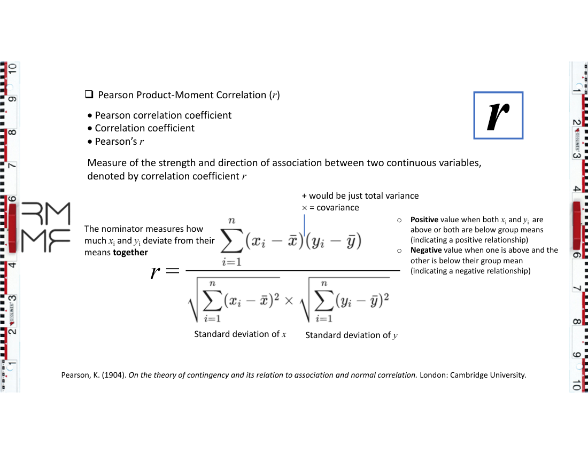
皮尔逊积矩相关（Pearson Product-Moment Correlation (r)）
- 皮尔逊相关系数（Pearson correlation coefficient）
- 相关系数（Correlation coefficient）
- 皮尔逊 r（Pearson’s r）
用于衡量两个连续变量（continuous variables）之间关联的强度（strength）与方向（direction），以相关系数（correlation coefficient） r 表示。
公式（r =）各部分标注：
- 相加（
+）只会得到总方差（total variance） - 相乘（
×）= 协方差（covariance） - x 的标准差（Standard deviation）
- y 的标准差（Standard deviation）
- 分子（nominator）衡量
xi和yi共同偏离各自均值（means）的程度：- 当
xi和yi同时高于或同时低于组均值（means）时为正值（表明存在正相关关系（positive relationship）） - 当其中一个高于而另一个低于其组均值（mean）时为负值（表明存在负相关关系（negative relationship））
- 当
参考文献：Pearson, K. (1904). On the theory of contingency and its relation to association and normal correlation. London: Cambridge University.
英文检索原文（公式与版式请看左侧原图）
Pearson correlation coefficient Correlation coefficient Pearson’s r Measure of the strength and direction of association between two continuous variables, denoted by correlation coefficient r Pearson Product-Moment Correlation (r) r Pearson, K. (1904). On the theory of contingency and its relation to association and normal correlation. London: Cambridge University. r = + would be just total variance = covariance Standard deviation of x Standard deviation of y The nominator measures how much xi and yi deviate from their means together o Positive value when both xi and yi are above or both are below group means (indicating a positive relationship) o Negative value when one is above and the other is below their group mean (indicating a negative relationship)

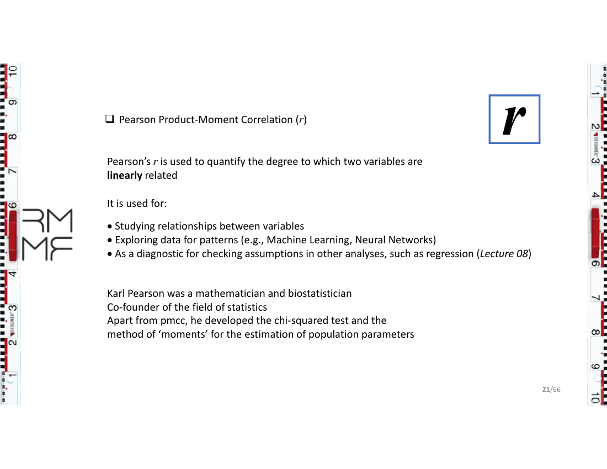
皮尔逊积矩相关（Pearson Product-Moment Correlation (r)）
皮尔逊 r（Pearson’s r） 用于量化两个变量（variables）之间的线性相关（linearly related）程度。
它可用于：
- 研究变量（variables）之间的关系
- 探索数据中的模式（例如：机器学习（Machine Learning）、神经网络（Neural Networks））
- 作为检验其他分析中前提假设（assumptions）的诊断工具，例如回归（regression）（第 08 讲）
Karl Pearson 人物简介：
- Karl Pearson 是一位数学家与生物统计学家
- 统计学（statistics）领域的共同奠基人
- 除了皮尔逊积矩相关系数（pmcc）之外，他还提出了卡方检验（chi-squared test）以及用于估计总体参数（population parameters）的「矩估计法（method of ‘moments’）」
英文检索原文（公式与版式请看左侧原图）
Pearson’s r is used to quantify the degree to which two variables are linearly related r Pearson Product-Moment Correlation (r) It is used for: Studying relationships between variables Exploring data for patterns (e.g., Machine Learning, Neural Networks) As a diagnostic for checking assumptions in other analyses, such as regression (Lecture 08) Karl Pearson was a mathematician and biostatistician Co-founder of the field of statistics Apart from pmcc, he developed the chi-squared test and the method of ‘moments’ for the estimation of population parameters 21/66

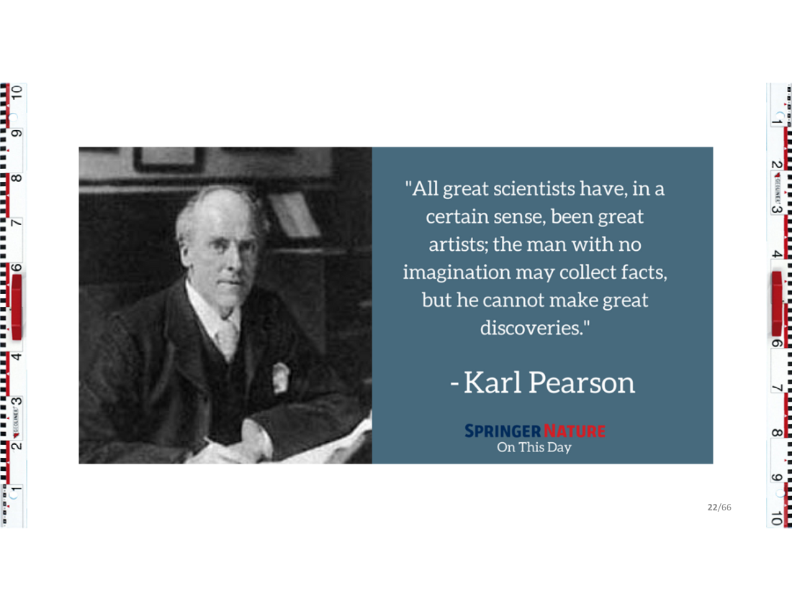
“在某种意义上，所有伟大的科学家都曾是伟大的艺术家；没有想象力的人或许能收集事实，但他无法做出伟大的发现。”
—— Karl Pearson
SPRINGER NATURE · 当日历史（On This Day）
英文检索原文（公式与版式请看左侧原图）
22/66

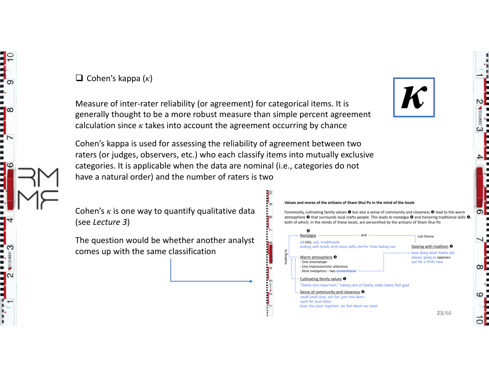
科恩 kappa（Cohen’s kappa (κ)）
用于衡量分类题项（categorical items）的评分者间信度（inter-rater reliability）（或一致性（agreement））。它通常被认为比简单的百分比一致性计算更稳健（robust），因为 κ 考虑了随机一致性（agreement occurring by chance）。
科恩 kappa（Cohen’s kappa） 用于评估两位评分者（raters）（或评判者、观察者等）各自将项目归入互斥类别（mutually exclusive categories）时的一致性信度（reliability）。它适用于数据为称名数据（nominal）（即类别没有自然顺序）且评分者（raters）人数为两人的情况。
- 科恩 κ（Cohen’s κ） 是对质性数据（qualitative data）进行量化（quantify）的一种方法（见第 3 讲）
- 核心问题是：另一位分析者是否会得出相同的分类结果
英文检索原文（公式与版式请看左侧原图）
κ Cohen’s kappa (κ) Measure of inter-rater reliability (or agreement) for categorical items. It is generally thought to be a more robust measure than simple percent agreement calculation since κ takes into account the agreement occurring by chance Cohen’s kappa is used for assessing the reliability of agreement between two raters (or judges, observers, etc.) who each classify items into mutually exclusive categories. It is applicable when the data are nominal (i.e., categories do not have a natural order) and the number of raters is two Cohen’s κ is one way to quantify qualitative data (see Lecture 3) The question would be whether another analyst comes up with the same classification 23/66

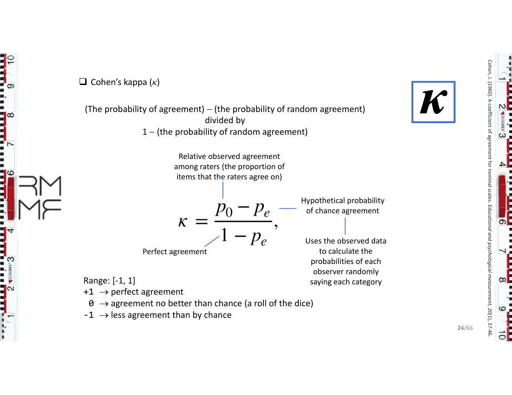
科恩 kappa（Cohen’s kappa (κ)）
- 随机一致性的假设概率（Hypothetical probability of chance agreement）
- 评分者（raters）之间的相对观测一致性（Relative observed agreement）（即评分者（raters）达成一致的项目比例）
- 利用观测数据来计算每位观察者随机说出每个类别的概率
公式说明：
- （一致性概率（The probability of agreement））-（随机一致性概率（the probability of random agreement））
- 除以
- 1 -（随机一致性概率（the probability of random agreement））
取值范围：[-1, 1]
- +1 → 完全一致（perfect agreement）
- 0 → 一致性不比随机概率更好（如同掷骰子）
- -1 → 一致性低于随机概率
图示标注：完全一致（Perfect agreement）
参考文献：Cohen, J. (1960). A coefficient of agreement for nominal scales. Educational and psychological measurement, 20(1), 37-46.
英文检索原文（公式与版式请看左侧原图）
κ Cohen’s kappa (κ) Hypothetical probability of chance agreement Relative observed agreement among raters (the proportion of items that the raters agree on) Uses the observed data to calculate the probabilities of each observer randomly saying each category (The probability of agreement) (the probability of random agreement) divided by 1 (the probability of random agreement) Range: [-1, 1] +1 perfect agreement 0 agreement no better than chance (a roll of the dice) ‐1 less agreement than by chance Perfect agreement κ Cohen, J. (1960). A coefficient of agreement for nominal scales. Educational and psychological measurement, 20(1), 37-46. 24/66

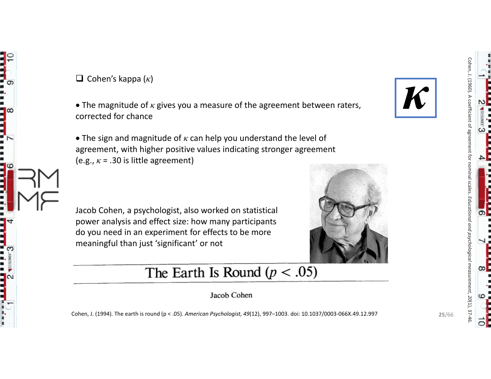
科恩 kappa（Cohen’s kappa (κ)）
κ的大小为你提供了经过机遇校正（corrected for chance）后的评分者间一致性（agreement between raters）度量。κ的符号和大小可以帮助你理解一致性的水平，更高的正值表明更强的一致性（例如，κ = .30 表示一致性很小）。
心理学家 Jacob Cohen 还致力于统计检验力分析（statistical power analysis）和效应量（effect size）的研究：在一项实验（experiment）中，你需要多少名参与者（participants），才能使效应（effects）比单纯的「是否显著（significant）」更有意义。
参考文献（References）
- Cohen, J. (1960). A coefficient of agreement for nominal scales. Educational and psychological measurement, 20(1), 37-46.
- Cohen, J. (1994). The earth is round (p < .05). American Psychologist, 49(12), 997–1003. doi: 10.1037/0003-066X.49.12.997
英文检索原文（公式与版式请看左侧原图）
The magnitude of κ gives you a measure of the agreement between raters, corrected for chance The sign and magnitude of κ can help you understand the level of agreement, with higher positive values indicating stronger agreement (e.g., κ = .30 is little agreement) Jacob Cohen, a psychologist, also worked on statistical power analysis and effect size: how many participants do you need in an experiment for effects to be more meaningful than just ‘significant’ or not κ Cohen’s kappa (κ) Cohen, J. (1960). A coefficient of agreement for nominal scales. Educational and psychological measurement, 20(1), 37-46. Cohen, J. (1994). The earth is round (p < .05). American Psychologist, 49(12), 997–1003. doi: 10.1037/0003-066X.49.12.997 25/66

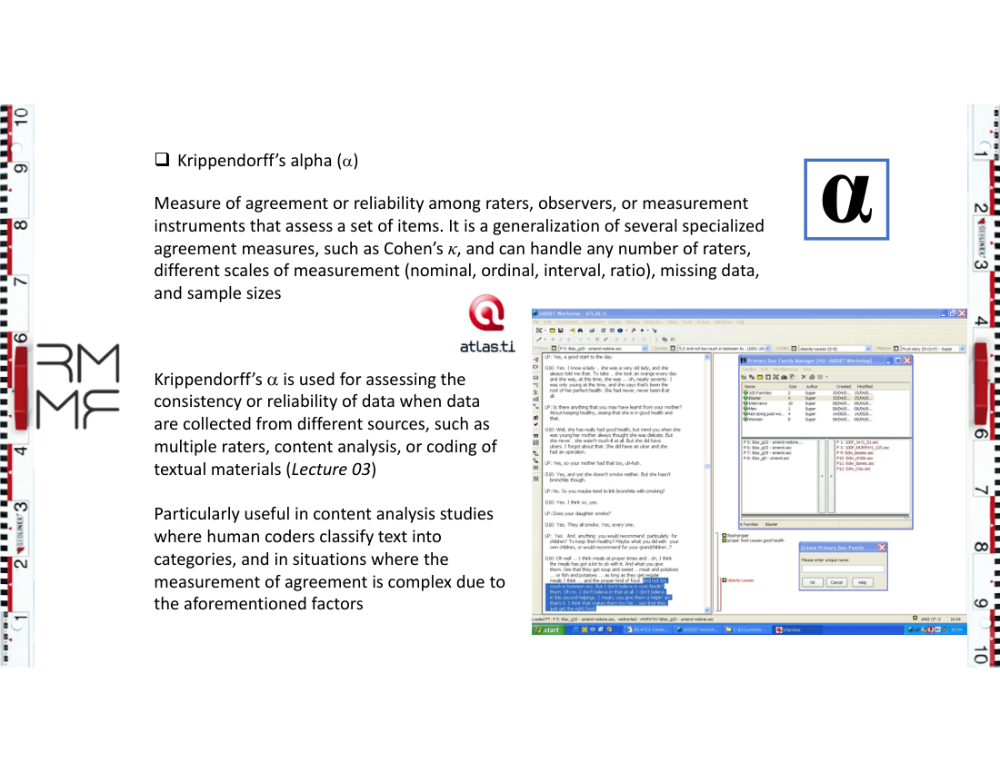
克里彭多夫 alpha（Krippendorff’s alpha (α)）
用于衡量对一组题项（items）进行评估的评分者（raters）、观察者（observers）或测量工具（measurement instruments）之间的一致性（agreement）或信度（reliability）。它是几种专门一致性指标（如科恩 κ（Cohen’s κ））的推广，并且能够处理任意数量的评分者、不同的测量尺度（scales of measurement）（定类（nominal）、定序（ordinal）、定距（interval）、定比（ratio））、缺失数据（missing data）以及样本量（sample sizes）。
- 克里彭多夫 α（Krippendorff’s α） 用于在数据来自不同来源时评估数据的一致性（consistency）或信度（reliability），例如多个评分者（raters）、内容分析（content analysis）或对文本材料的编码（coding）（Lecture 03）。
- 在人类编码员（coders）将文本归入不同类别（categories）的内容分析（content analysis）研究中，以及由于上述因素导致一致性测量较为复杂的情况下，它尤为有用。
英文检索原文（公式与版式请看左侧原图）
Measure of agreement or reliability among raters, observers, or measurement instruments that assess a set of items. It is a generalization of several specialized agreement measures, such as Cohen’s κ, and can handle any number of raters, different scales of measurement (nominal, ordinal, interval, ratio), missing data, and sample sizes α Krippendorff’s alpha () Krippendorff’s is used for assessing the consistency or reliability of data when data are collected from different sources, such as multiple raters, content analysis, or coding of textual materials (Lecture 03) Particularly useful in content analysis studies where human coders classify text into categories, and in situations where the measurement of agreement is complex due to the aforementioned factors

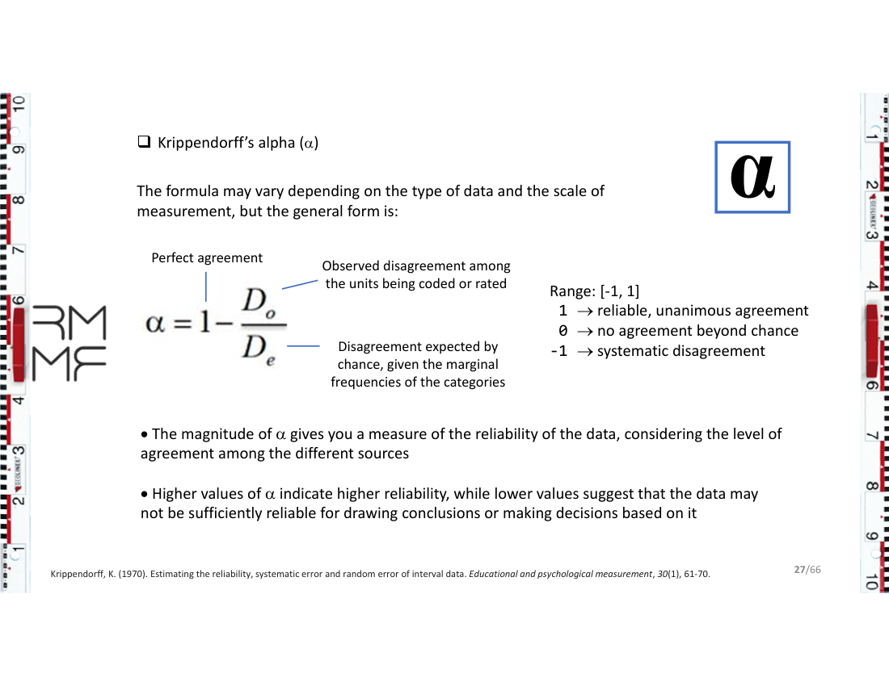
克里彭多夫 alpha（Krippendorff’s alpha (α)）
该公式可能因数据类型和测量尺度（scale of measurement）而异，但一般形式为：
- 正在被编码（coded）或评分（rated）的单位之间的观测分歧（Observed disagreement）
- 给定各类别边际频数（marginal frequencies）的情况下，按机遇预期的分歧（Disagreement expected by chance）
- 1 → 完全一致（Perfect agreement）
取值范围（Range）：[-1, 1]
1→ 可靠的、完全一致的同意（reliable, unanimous agreement）0→ 不超过机遇水平的一致性（no agreement beyond chance）-1→ 系统性分歧（systematic disagreement）
α的大小为你提供了数据信度（reliability）的度量，其中考虑了不同来源之间的一致性水平。- 较高的
α值表明更高的信度（reliability），而较低的值则提示数据可能不够可靠，不足以据此得出结论或做出决策。
参考文献（References）
- Krippendorff, K. (1970). Estimating the reliability, systematic error and random error of interval data. Educational and psychological measurement, 30(1), 61-70.
英文检索原文（公式与版式请看左侧原图）
The formula may vary depending on the type of data and the scale of measurement, but the general form is: α Krippendorff’s alpha () Observed disagreement among the units being coded or rated Disagreement expected by chance, given the marginal frequencies of the categories Range: [-1, 1] 1 reliable, unanimous agreement 0 no agreement beyond chance ‐1 systematic disagreement The magnitude of gives you a measure of the reliability of the data, considering the level of agreement among the different sources Higher values of indicate higher reliability, while lower values suggest that the data may not be sufficiently reliable for drawing conclusions or making decisions based on it Krippendorff, K. (1970). Estimating the reliability, systematic error and random error of interval data. Educational and psychological measurement, 30(1), 61-70. 27/66 Perfect agreement

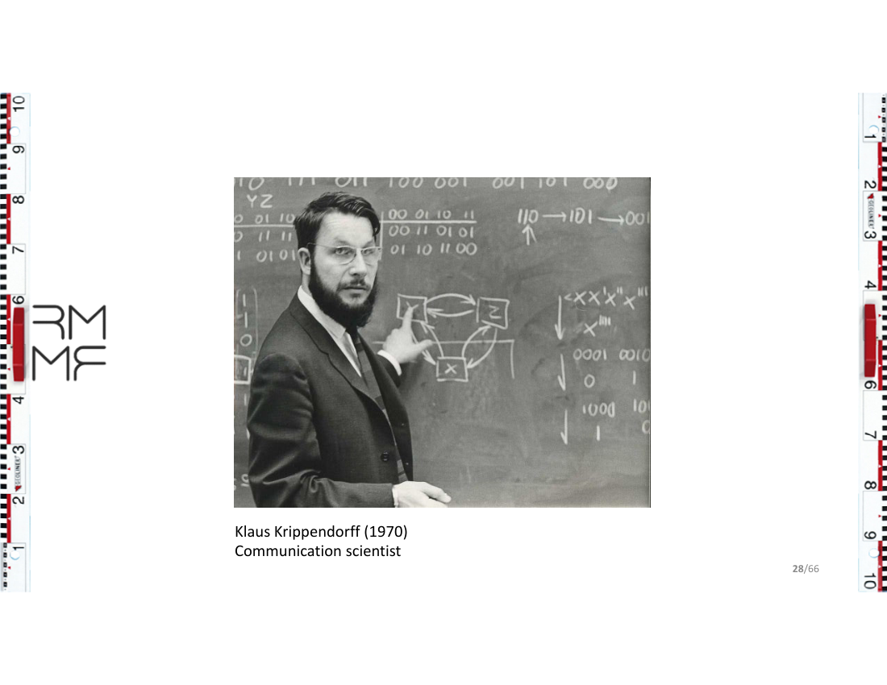
Klaus Krippendorff (1970)
传播科学家（Communication scientist）
英文检索原文（公式与版式请看左侧原图）
Klaus Krippendorff (1970) Communication scientist 28/66

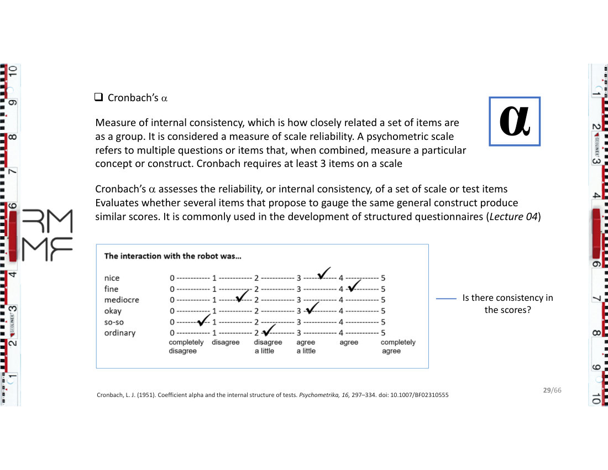
克龙巴赫 α（Cronbach’s α）
内部一致性（internal consistency）的度量，即一组题项（items）作为一个整体联系有多紧密。它被视为量表信度（scale reliability）的度量。心理测量量表（psychometric scale）指的是组合起来测量某个特定概念（concept）或构念（construct）的多个问题或题项。Cronbach 要求一个量表上至少有 3 个题项。
- 克龙巴赫 α（Cronbach’s α） 评估一组量表或测验题项的信度（reliability）或内部一致性（internal consistency）。
- 评估旨在衡量同一总体构念（construct）的多个题项是否产生相似的得分。它常用于结构化问卷（structured questionnaires）的编制中（Lecture 04）。
- 得分之间是否存在一致性？（Is there consistency in the scores?）
参考文献（References）
- Cronbach, L. J. (1951). Coefficient alpha and the internal structure of tests. Psychometrika, 16, 297–334. doi: 10.1007/BF02310555
英文检索原文（公式与版式请看左侧原图）
α Cronbach’s Measure of internal consistency, which is how closely related a set of items are as a group. It is considered a measure of scale reliability. A psychometric scale refers to multiple questions or items that, when combined, measure a particular concept or construct. Cronbach requires at least 3 items on a scale Cronbach’s assesses the reliability, or internal consistency, of a set of scale or test items Evaluates whether several items that propose to gauge the same general construct produce similar scores. It is commonly used in the development of structured questionnaires (Lecture 04) Is there consistency in the scores? Cronbach, L. J. (1951). Coefficient alpha and the internal structure of tests. Psychometrika, 16, 297–334. doi: 10.1007/BF02310555 29/66

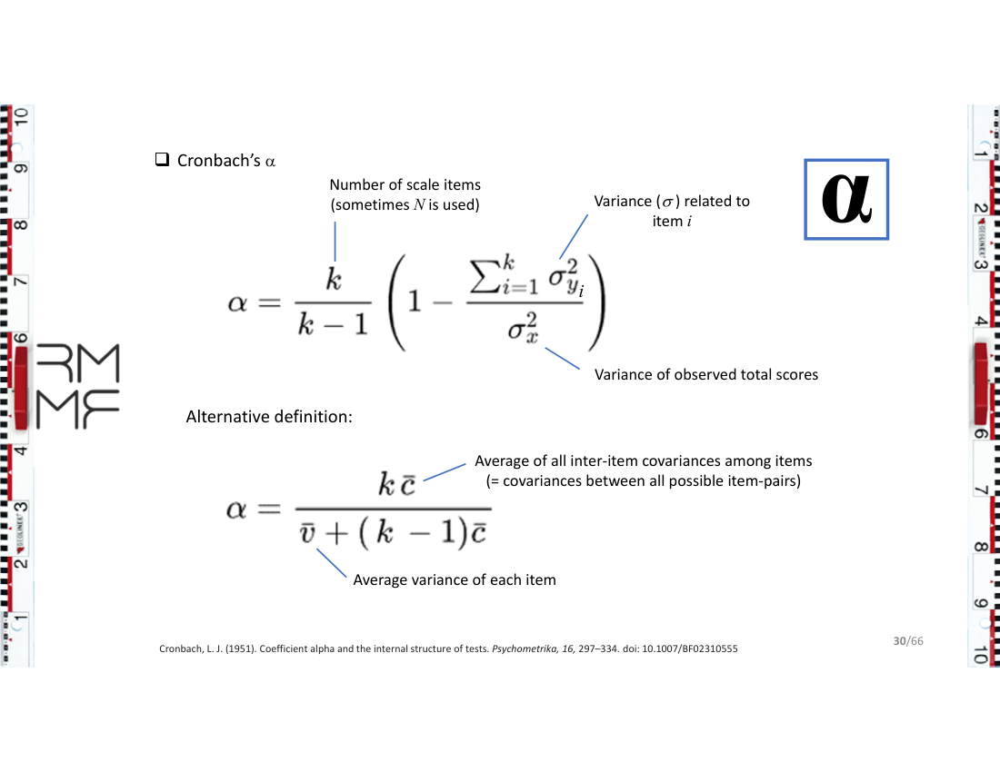
克龙巴赫 α（Cronbach’s α）
- 量表题项数量（Number of scale items）（有时使用 N）
- 与第 i 个题项相关的方差（Variance）
- 观测总分方差（Variance of observed total scores）
另一种定义（Alternative definition）：
- 题项间所有题项间协方差（inter-item covariances）的平均值（= 所有可能题项配对之间的协方差（covariances））
- 每个题项的平均方差（Average variance）
参考文献（References）
- Cronbach, L. J. (1951). Coefficient alpha and the internal structure of tests. Psychometrika, 16, 297–334. doi: 10.1007/BF02310555
英文检索原文（公式与版式请看左侧原图）
i α Cronbach’s Alternative definition: Cronbach, L. J. (1951). Coefficient alpha and the internal structure of tests. Psychometrika, 16, 297–334. doi: 10.1007/BF02310555 Number of scale items (sometimes N is used) Variance () related to item i Variance of observed total scores Average of all inter-item covariances among items (= covariances between all possible item-pairs) Average variance of each item 30/66

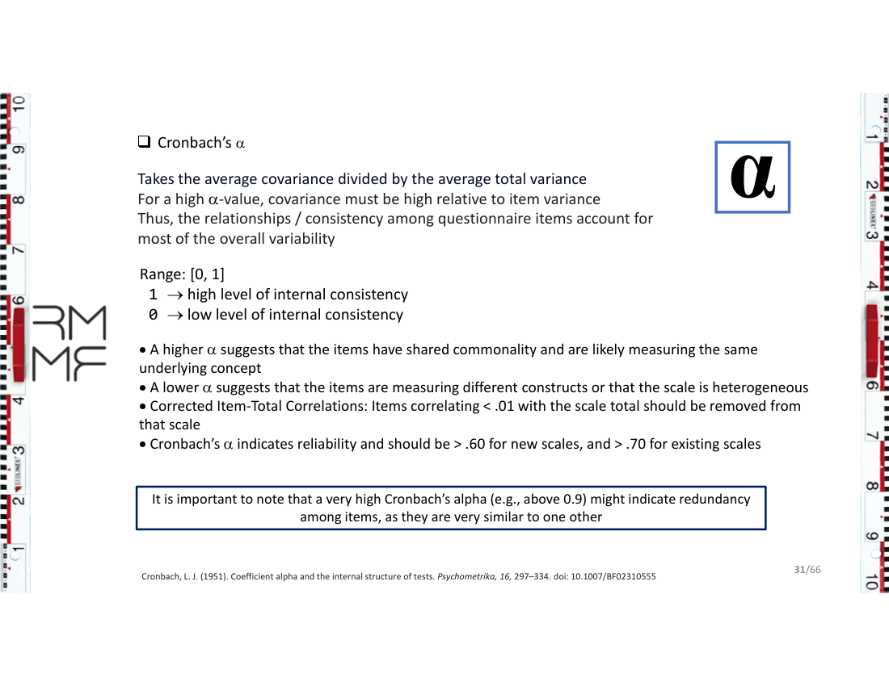
克龙巴赫 α（Cronbach’s α）
- 取平均协方差（average covariance）除以平均总方差（average total variance）。
- 要获得较高的
α值，协方差（covariance）相对于题项方差（item variance）必须较高。 - 因此，问卷题项之间的关系／一致性解释了大部分总体变异性（variability）。
- 较高的
α表明这些题项具有共同性，且很可能测量的是同一个潜在概念（underlying concept）。 - 较低的
α表明这些题项测量的是不同的构念（constructs），或者该量表（scale）具有异质性（heterogeneous）。 - 校正后的题项-总分相关（Corrected Item-Total Correlations）：与量表总分相关
< .01的题项应从该量表中剔除。 - 克龙巴赫 α（Cronbach’s α） 反映信度（reliability），对于新量表应
> .60，对于既有量表应> .70。
取值范围（Range）：[0, 1]
1→ 高水平的内部一致性（internal consistency）0→ 低水平的内部一致性（internal consistency）
需要注意的是，非常高的克龙巴赫 α（Cronbach’s alpha）（例如高于 0.9）可能表明题项之间存在冗余（redundancy），因为它们彼此过于相似。
参考文献（References）
- Cronbach, L. J. (1951). Coefficient alpha and the internal structure of tests. Psychometrika, 16, 297–334. doi: 10.1007/BF02310555
英文检索原文（公式与版式请看左侧原图）
α Cronbach’s Takes the average covariance divided by the average total variance For a high -value, covariance must be high relative to item variance Thus, the relationships / consistency among questionnaire items account for most of the overall variability A higher suggests that the items have shared commonality and are likely measuring the same underlying concept A lower suggests that the items are measuring different constructs or that the scale is heterogeneous Corrected Item-Total Correlations: Items correlating < .01 with the scale total should be removed from that scale Cronbach’s indicates reliability and should be > .60 for new scales, and > .70 for existing scales Cronbach, L. J. (1951). Coefficient alpha and the internal structure of tests. Psychometrika, 16, 297–334. doi: 10.1007/BF02310555 Range: [0, 1] 1 high level of internal consistency 0 low level of internal consistency It is important to note that a very high Cronbach’s alpha (e.g., above 0.9) might indicate redundancy among items, as they are very similar to one other 31/66

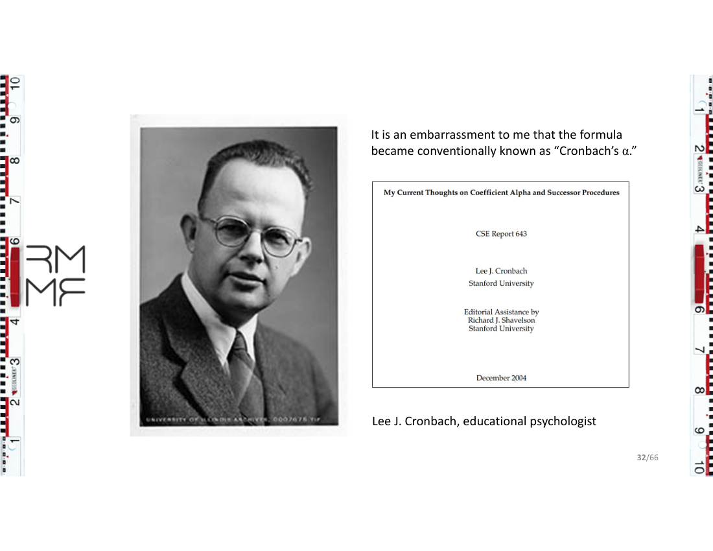
Lee J. Cronbach，教育心理学家（educational psychologist）
「这个公式后来习惯性地被称为『克龙巴赫 α（Cronbach’s α）』，这让我感到很不好意思。」
英文检索原文（公式与版式请看左侧原图）
Lee J. Cronbach, educational psychologist It is an embarrassment to me that the formula became conventionally known as “Cronbach’s α.” 32/66

课间休息（Break）
英文检索原文（公式与版式请看左侧原图）
Break

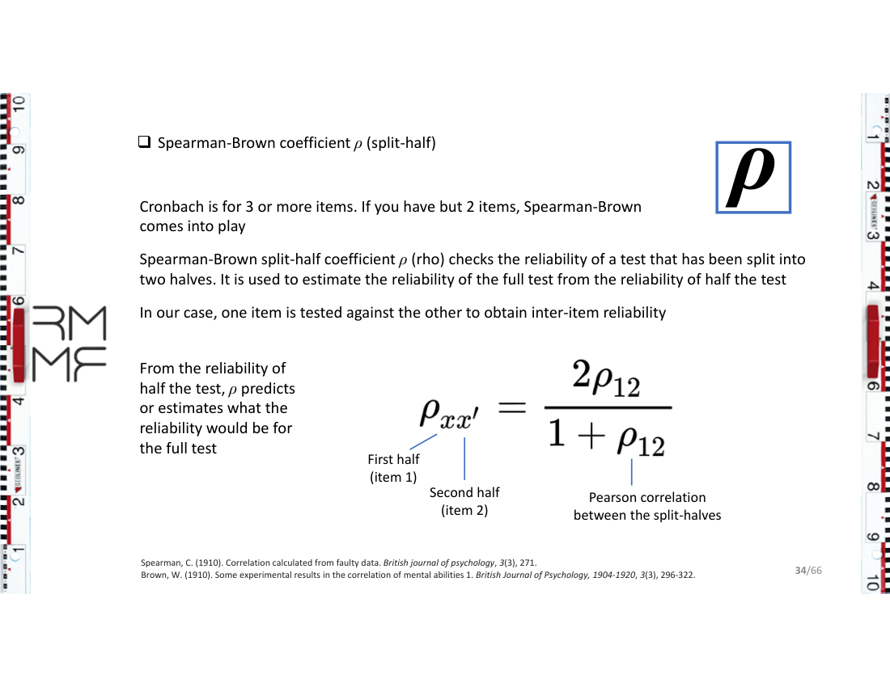
斯皮尔曼-布朗系数 ρ（分半）（Spearman-Brown coefficient ρ (split-half)）
Cronbach 适用于 3 个或更多题项（items）。如果你只有 2 个题项，就需要用到斯皮尔曼-布朗（Spearman-Brown）。
- 斯皮尔曼-布朗分半系数 ρ（Spearman-Brown split-half coefficient ρ (rho)） 用于检验被拆分为两半的测验的信度（reliability）。它用于根据半个测验的信度来估计完整测验的信度。
- 在我们的情况下，将两个题项相互检验，以获得题项间信度（inter-item reliability）。
公式与图示说明：
- 第一半（题项 1）（First half (item 1)）
- 第二半（题项 2）（Second half (item 2)）
- 两个分半之间的皮尔逊相关（Pearson correlation）（Pearson correlation between the split-halves）
- 根据半个测验的信度（reliability），
ρ预测或估计完整测验的信度将会是多少。
参考文献（References）
- Spearman, C. (1910). Correlation calculated from faulty data. British journal of psychology, 3(3), 271.
- Brown, W. (1910). Some experimental results in the correlation of mental abilities 1. British Journal of Psychology, 1904-1920, 3(3), 296-322.
英文检索原文（公式与版式请看左侧原图）
ρ Spearman-Brown coefficient ρ (split-half) Cronbach is for 3 or more items. If you have but 2 items, Spearman-Brown comes into play Spearman-Brown split-half coefficient ρ (rho) checks the reliability of a test that has been split into two halves. It is used to estimate the reliability of the full test from the reliability of half the test In our case, one item is tested against the other to obtain inter-item reliability First half (item 1) Second half (item 2) Pearson correlation between the split-halves From the reliability of half the test, ρ predicts or estimates what the reliability would be for the full test Spearman, C. (1910). Correlation calculated from faulty data. British journal of psychology, 3(3), 271. Brown, W. (1910). Some experimental results in the correlation of mental abilities 1. British Journal of Psychology, 1904-1920, 3(3), 296-322. 34/66

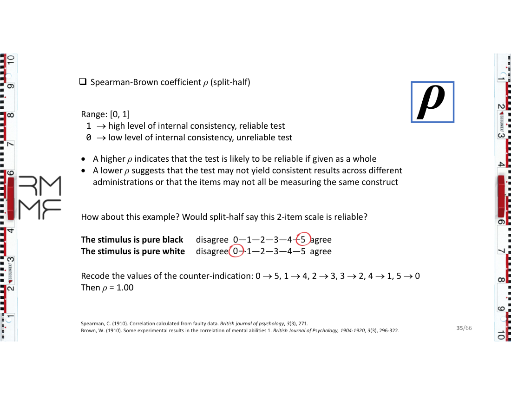
斯皮尔曼-布朗系数 ρ（分半）（Spearman-Brown coefficient ρ (split-half)）
- 较高的
ρ表明该测验作为整体施测时很可能是可靠的（reliable）。 - 较低的
ρ表明该测验在不同次施测中可能无法产生一致的结果，或者这些题项（items）可能并非都在测量同一个构念（construct）。
取值范围（Range）：[0, 1]
1→ 高水平的内部一致性（internal consistency），可靠的测验0→ 低水平的内部一致性（internal consistency），不可靠的测验
这个例子怎么样？分半法（split-half）会认为这个双题项量表（2-item scale）是可靠的吗？
- 该刺激物（stimulus）是纯黑色的
不同意（disagree） 0—1—2—3—4—5 同意（agree）
- 该刺激物（stimulus）是纯白色的
不同意（disagree） 0—1—2—3—4—5 同意（agree）
对反指示题项（counter-indication）的数值进行重新编码（Recode）：0 → 5, 1 → 4, 2 → 3, 3 → 2, 4 → 1, 5 → 0
那么 ρ = 1.00
参考文献（References）
- Spearman, C. (1910). Correlation calculated from faulty data. British journal of psychology, 3(3), 271.
- Brown, W. (1910). Some experimental results in the correlation of mental abilities 1. British Journal of Psychology, 1904-1920, 3(3), 296-322.
英文检索原文（公式与版式请看左侧原图）
A higher ρ indicates that the test is likely to be reliable if given as a whole A lower ρ suggests that the test may not yield consistent results across different administrations or that the items may not all be measuring the same construct Range: [0, 1] 1 high level of internal consistency, reliable test 0 low level of internal consistency, unreliable test ρ Spearman, C. (1910). Correlation calculated from faulty data. British journal of psychology, 3(3), 271. Brown, W. (1910). Some experimental results in the correlation of mental abilities 1. British Journal of Psychology, 1904-1920, 3(3), 296-322. Spearman-Brown coefficient ρ (split-half) How about this example? Would split-half say this 2-item scale is reliable? The stimulus is pure black disagree 0—1—2—3—4—5 agree The stimulus is pure white disagree 0—1—2—3—4—5 agree Recode the values of the counter-indication: 0 5, 1 4, 2 3, 3 2, 4 1, 5 0 Then ρ = 1.00 35/66

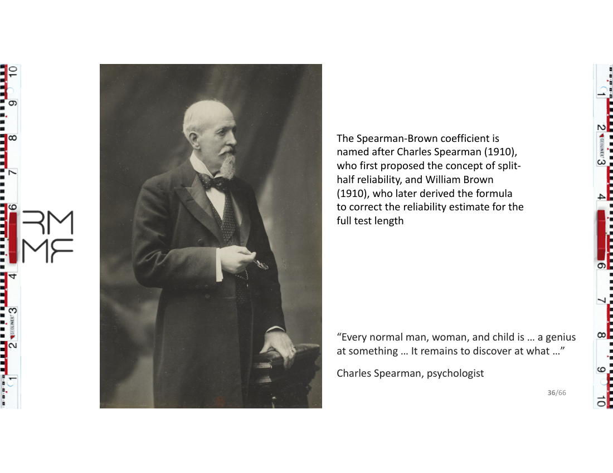
斯皮尔曼-布朗系数（Spearman-Brown coefficient）以 Charles Spearman（1910）和 William Brown（1910）命名；前者率先提出了分半信度（split-half reliability）的概念，后者随后推导出公式，用以针对完整测验长度校正信度估计（reliability estimate）。
“每个正常的男人、女人和孩子……在某件事上都是天才……剩下的只是去发现在哪件事上……”
—— Charles Spearman，心理学家
英文检索原文（公式与版式请看左侧原图）
The Spearman-Brown coefficient is named after Charles Spearman (1910), who first proposed the concept of split- half reliability, and William Brown (1910), who later derived the formula to correct the reliability estimate for the full test length “Every normal man, woman, and child is … a genius at something … It remains to discover at what …” Charles Spearman, psychologist 36/66

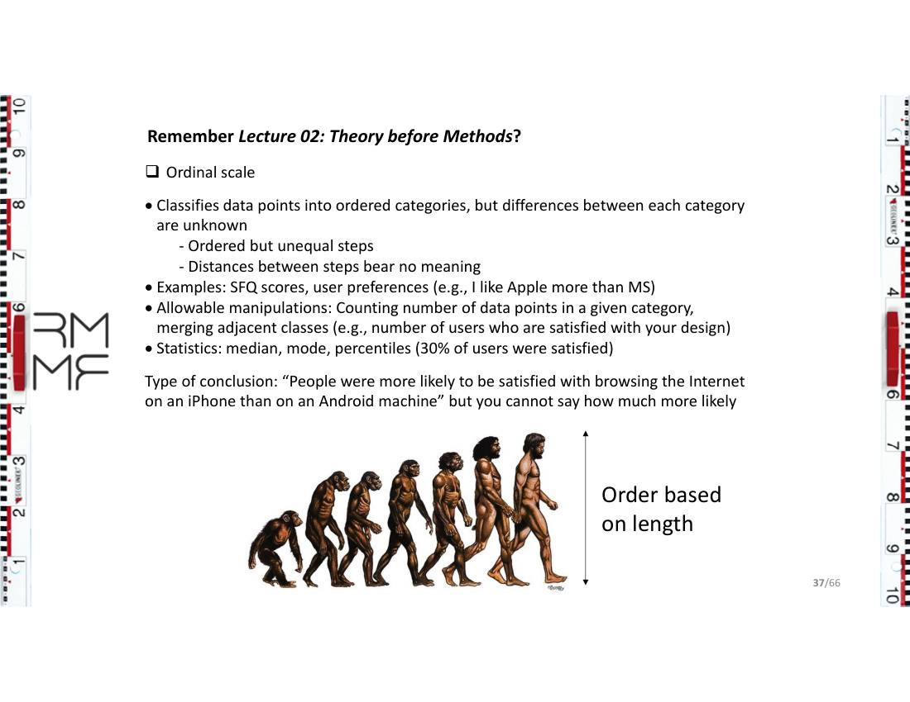
顺序量表（Ordinal scale）
- 将数据点（data points）归类为有序类别（categories），但各个类别之间的差异未知
- 有序但步长不等
- 步长之间的距离没有意义
- 示例：SFQ 分数（SFQ scores）、用户偏好（user preferences）（例如，我喜欢 Apple 胜过 MS）
- 允许的数据操作（Allowable manipulations）：统计某一特定类别中的数据点（data points）数量、合并相邻类别（例如，对你的设计感到满意的用户数量）
- 统计量（Statistics）：中位数（median）、众数（mode）、百分位数（percentiles）（30% 的用户感到满意）
结论类型：“人们在 iPhone 上浏览互联网比在 Android 机器上更有可能感到满意”，但你无法说明可能性高出多少
还记得第 2 讲（Lecture 02）：理论先于方法（Theory before Methods）吗？
（图示说明：基于长度的排序）
英文检索原文（公式与版式请看左侧原图）
Ordinal scale Classifies data points into ordered categories, but differences between each category are unknown - Ordered but unequal steps - Distances between steps bear no meaning Examples: SFQ scores, user preferences (e.g., I like Apple more than MS) Allowable manipulations: Counting number of data points in a given category, merging adjacent classes (e.g., number of users who are satisfied with your design) Statistics: median, mode, percentiles (30% of users were satisfied) Type of conclusion: “People were more likely to be satisfied with browsing the Internet on an iPhone than on an Android machine” but you cannot say how much more likely Remember Lecture 02: Theory before Methods? Order based on length 37/66

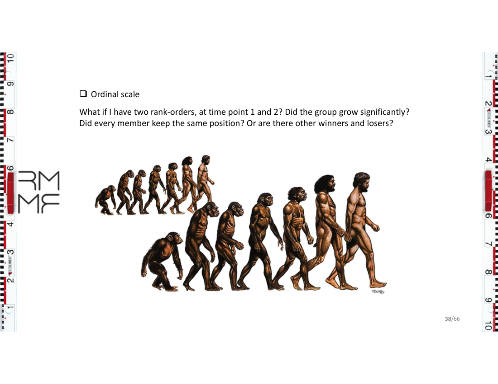
顺序量表（Ordinal scale）
如果我在时间点 1 和时间点 2 有两个等级顺序（rank-orders）呢？该群体是否发生了显著（significantly）增长？每位成员是否都保持了相同的排名位置？还是出现了其他的赢家和输家？
英文检索原文（公式与版式请看左侧原图）
Ordinal scale What if I have two rank-orders, at time point 1 and 2? Did the group grow significantly? Did every member keep the same position? Or are there other winners and losers? 38/66

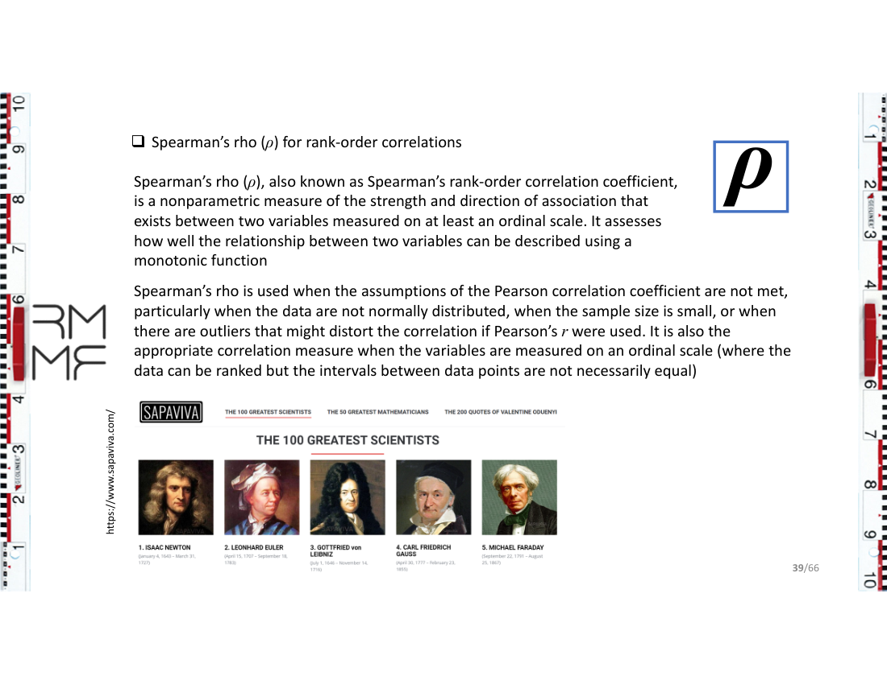
用于等级顺序相关（rank-order correlations）的斯皮尔曼 rho（Spearman’s rho (ρ)）
（符号：ρ）
斯皮尔曼 rho（Spearman’s rho (ρ)），又称斯皮尔曼等级顺序相关系数（Spearman’s rank-order correlation coefficient），是一种非参数（nonparametric）指标，用于衡量在至少达到顺序量表（ordinal scale）水平上测量的两个变量（variables）之间关联强度（strength of association）与方向。它评估两个变量之间的关系能在多大程度上用单调函数（monotonic function）来描述。
当不满足皮尔逊相关系数（Pearson correlation coefficient）的前提假设（assumptions）时，便可使用斯皮尔曼 rho（Spearman’s rho），尤其是当数据不呈正态分布（normally distributed）、当样本量（sample size）较小时，或存在可能会在使用皮尔逊 r（Pearson’s r）时扭曲相关性的异常值（outliers）时。当变量是在顺序量表（ordinal scale）上测量时（即数据可以排序，但数据点之间的间隔未必相等），它也是恰当的相关指标（correlation measure）。
来源：https://www.sapaviva.com/
英文检索原文（公式与版式请看左侧原图）
ρ Spearman’s rho (ρ) for rank-order correlations Spearman’s rho (ρ), also known as Spearman’s rank-order correlation coefficient, is a nonparametric measure of the strength and direction of association that exists between two variables measured on at least an ordinal scale. It assesses how well the relationship between two variables can be described using a monotonic function Spearman’s rho is used when the assumptions of the Pearson correlation coefficient are not met, particularly when the data are not normally distributed, when the sample size is small, or when there are outliers that might distort the correlation if Pearson’s r were used. It is also the appropriate correlation measure when the variables are measured on an ordinal scale (where the data can be ranked but the intervals between data points are not necessarily equal) https://www.sapaviva.com/ 39/66

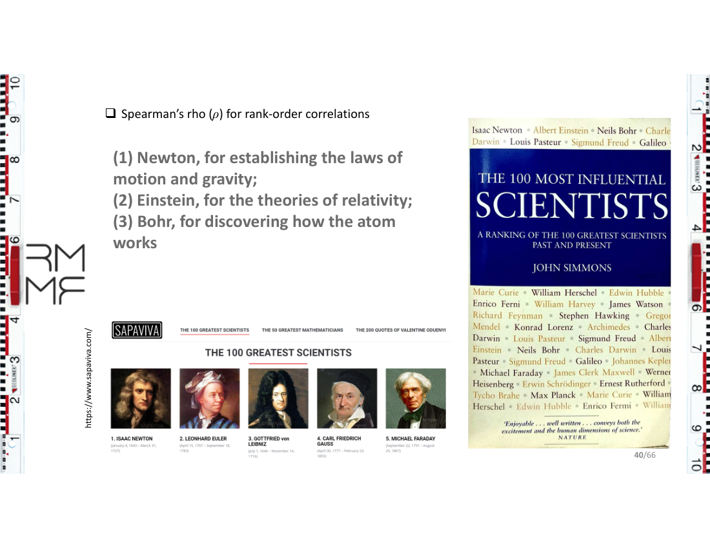
用于等级顺序相关（rank-order correlations）的斯皮尔曼 rho（Spearman’s rho (ρ)）
(1) Newton，因确立运动定律与万有引力定律；
(2) Einstein，因提出相对论；
(3) Bohr，因发现原子的运作机制。
来源：https://www.sapaviva.com/
英文检索原文（公式与版式请看左侧原图）
Spearman’s rho (ρ) for rank-order correlations (1) Newton, for establishing the laws of motion and gravity; (2) Einstein, for the theories of relativity; (3) Bohr, for discovering how the atom works https://www.sapaviva.com/ 40/66

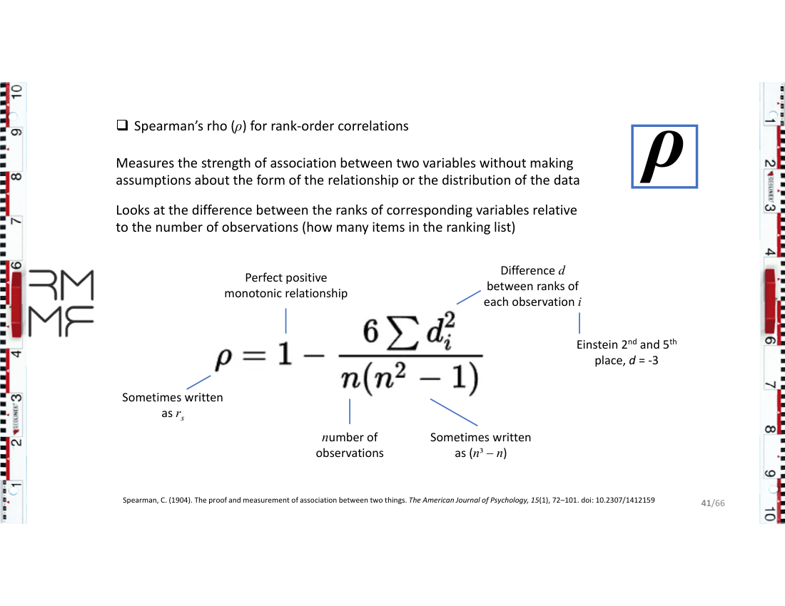
用于等级顺序相关（rank-order correlations）的斯皮尔曼 rho（Spearman’s rho (ρ)）
（符号：ρ）
- 公式注释：
- 有时写作 rs
- 每个观测值（observation） i 的等级（ranks）之差 d
- Einstein 第 2 名与第 5 名，d = -3
- 观测值数量（number of observations）
- 有时写作 (n³ - n)
- 完全正单调关系（Perfect positive monotonic relationship）
- 衡量两个变量（variables）之间的关联强度（strength of association），而不对关系形式或数据分布（distribution of the data）做出假设（assumptions）
- 考察对应变量的等级（ranks）差异相对于观测值数量（number of observations）（即排序列表中有多少个项目）的比例
参考文献：Spearman, C. (1904). The proof and measurement of association between two things. The American Journal of Psychology, 15(1), 72–101. doi: 10.2307/1412159
英文检索原文（公式与版式请看左侧原图）
ρ Spearman’s rho (ρ) for rank-order correlations Sometimes written as rs Difference d between ranks of each observation i Einstein 2nd and 5th place, d = -3 number of observations Sometimes written as (n³ n) Measures the strength of association between two variables without making assumptions about the form of the relationship or the distribution of the data Looks at the difference between the ranks of corresponding variables relative to the number of observations (how many items in the ranking list) Perfect positive monotonic relationship Spearman, C. (1904). The proof and measurement of association between two things. The American Journal of Psychology, 15(1), 72–101. doi: 10.2307/1412159 41/66

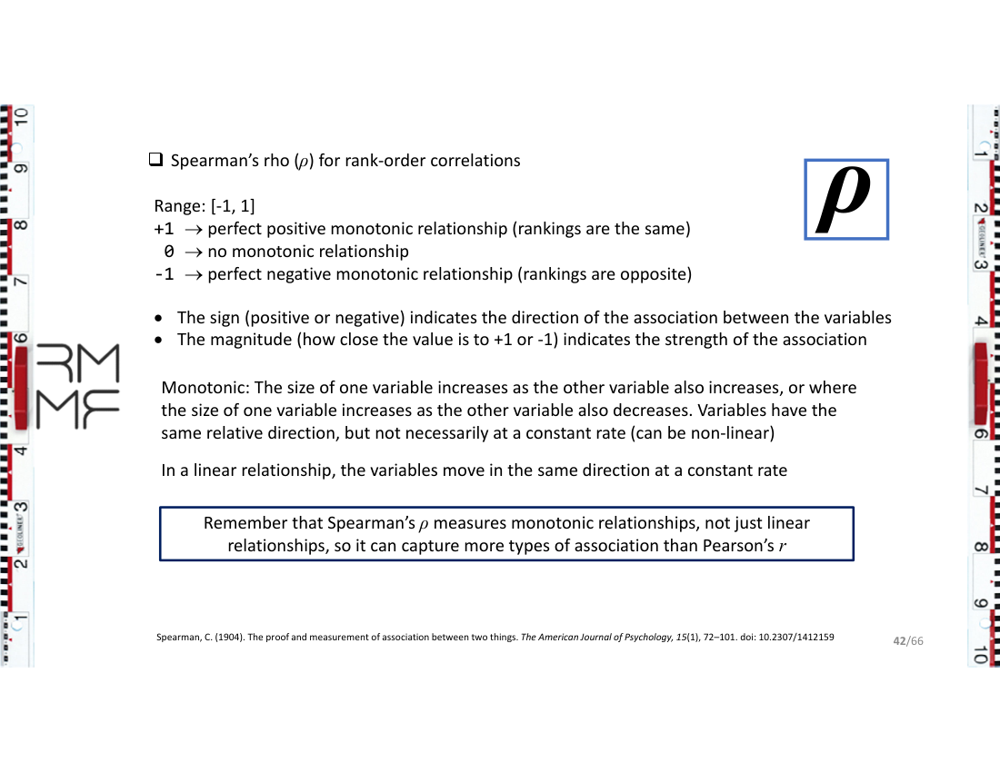
用于等级顺序相关（rank-order correlations）的斯皮尔曼 rho（Spearman’s rho (ρ)）
（符号：ρ）
- 符号（正或负）表示变量（variables）之间关联（association）的方向
- 数值大小（该值接近 +1 或 -1 的程度）表示关联强度（strength of the association）
取值范围（Range）：[-1, 1]
- +1 → 完全正单调关系（perfect positive monotonic relationship）（排名完全相同）
- 0 → 无单调关系（no monotonic relationship）
- -1 → 完全负单调关系（perfect negative monotonic relationship）（排名完全相反）
请记住，斯皮尔曼 ρ（Spearman’s ρ）衡量的是单调关系（monotonic relationships），而不仅仅是线性关系（linear relationships），因此它能捕捉比皮尔逊 r（Pearson’s r）更多类型的关联（association）。
单调性（Monotonic）：一个变量（variable）的数值随另一个变量的增大而增大，或者随另一个变量的增大而减小。变量具有相同的相对变化方向，但速率不一定恒定（可以是非线性（non-linear）的）。
在线性关系（linear relationship）中，变量以恒定的速率朝同一方向变化。
参考文献：Spearman, C. (1904). The proof and measurement of association between two things. The American Journal of Psychology, 15(1), 72–101. doi: 10.2307/1412159
英文检索原文（公式与版式请看左侧原图）
The sign (positive or negative) indicates the direction of the association between the variables The magnitude (how close the value is to +1 or -1) indicates the strength of the association Spearman, C. (1904). The proof and measurement of association between two things. The American Journal of Psychology, 15(1), 72–101. doi: 10.2307/1412159 Range: [-1, 1] +1 perfect positive monotonic relationship (rankings are the same) 0 no monotonic relationship ‐1 perfect negative monotonic relationship (rankings are opposite) ρ Spearman’s rho (ρ) for rank-order correlations Remember that Spearman’s ρ measures monotonic relationships, not just linear relationships, so it can capture more types of association than Pearson’s r Monotonic: The size of one variable increases as the other variable also increases, or where the size of one variable increases as the other variable also decreases. Variables have the same relative direction, but not necessarily at a constant rate (can be non-linear) In a linear relationship, the variables move in the same direction at a constant rate 42/66

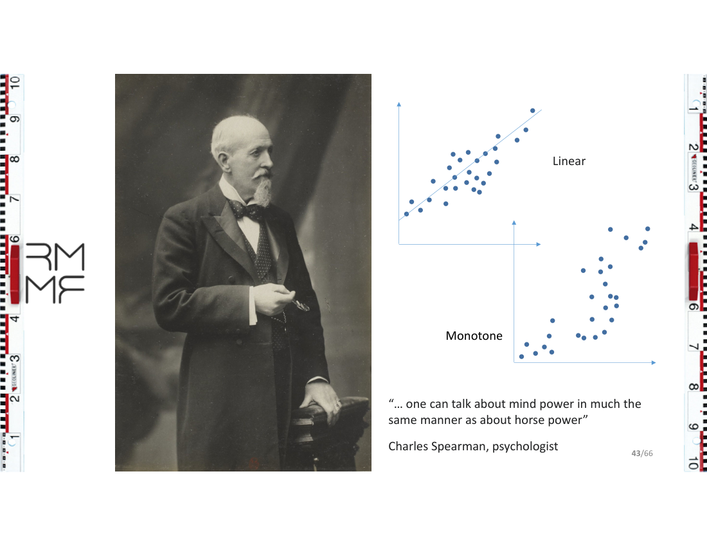
“……人们谈论心智能力的方式，很大程度上可以像谈论马力一样”
—— Charles Spearman，心理学家
- 散点图对比：
- 线性（Linear）
- 单调（Monotone）
英文检索原文（公式与版式请看左侧原图）
“… one can talk about mind power in much the same manner as about horse power” Charles Spearman, psychologist Linear Monotone 43/66

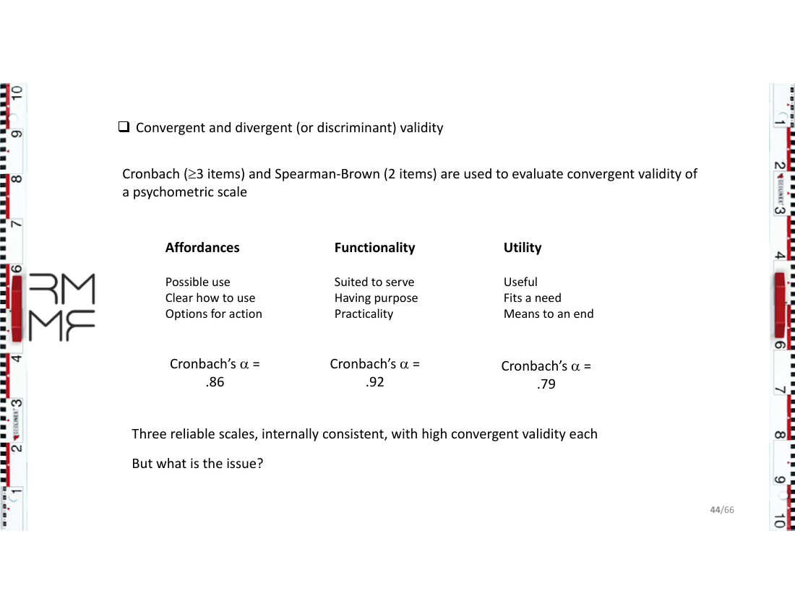
聚合效度（Convergent validity）与区分效度（divergent (or discriminant) validity）
克龙巴赫（Cronbach）（3 个题项（items））与斯皮尔曼-布朗（Spearman-Brown）（2 个题项（items））用于评估心理测量量表（psychometric scale）的聚合效度（convergent validity）
- 可供性（Affordances）
- 可能的用途（Possible use）
- 清楚如何使用（Clear how to use）
- 行动选项（Options for action）
- 克龙巴赫 α（Cronbach’s α） = .92
- 功能性（Functionality）
- 适合服务于目标（Suited to serve）
- 具有目的性（Having purpose）
- 实用性（Practicality）
- 克龙巴赫 α（Cronbach’s α） = .86
- 效用性（Utility）
- 有用的（Useful）
- 满足需求（Fits a need）
- 实现目的的手段（Means to an end）
- 克龙巴赫 α（Cronbach’s α） = .79
三个可靠的量表（scales），各自具有内部一致性（internally consistent）和高聚合效度（convergent validity）
但问题出在哪里？
英文检索原文（公式与版式请看左侧原图）
Convergent and divergent (or discriminant) validity Cronbach (3 items) and Spearman-Brown (2 items) are used to evaluate convergent validity of a psychometric scale Affordances Possible use Clear how to use Options for action Functionality Suited to serve Having purpose Practicality Utility Useful Fits a need Means to an end Cronbach’s = .92 Cronbach’s = .86 Cronbach’s = .79 Three reliable scales, internally consistent, with high convergent validity each But what is the issue? 44/66

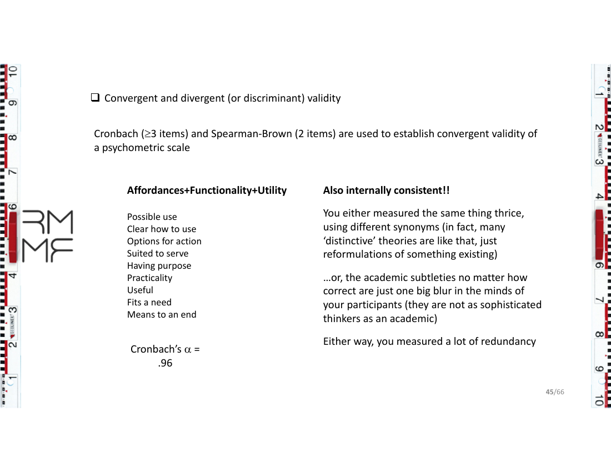
聚合效度（Convergent validity）与区分效度（divergent (or discriminant) validity）
克龙巴赫（Cronbach）（3 个题项（items））与斯皮尔曼-布朗（Spearman-Brown）（2 个题项（items））用于确立心理测量量表（psychometric scale）的聚合效度（convergent validity）
- 可供性 + 功能性 + 效用性（Affordances+Functionality+Utility）
- 可能的用途（Possible use）
- 清楚如何使用（Clear how to use）
- 行动选项（Options for action）
- 适合服务于目标（Suited to serve）
- 具有目的性（Having purpose）
- 实用性（Practicality）
- 有用的（Useful）
- 满足需求（Fits a need）
- 实现目的的手段（Means to an end）
- 克龙巴赫 α（Cronbach’s α） = .96
同样具有内部一致性（internally consistent）！！
- 要么你是用不同的同义词把同一件事测量了三遍（事实上，许多“独具一格的”理论就是这样，只是对已有理论的重新表述）
- ……要么不管这些学术上的细微差别有多准确，在你的参与者（participants）脑海里都只是一团模糊（他们并不像学者那样是精细的思考者）
- 无论哪种情况，你都测出了大量的冗余（redundancy）
英文检索原文（公式与版式请看左侧原图）
Convergent and divergent (or discriminant) validity Cronbach (3 items) and Spearman-Brown (2 items) are used to establish convergent validity of a psychometric scale Affordances+Functionality+Utility Possible use Clear how to use Options for action Suited to serve Having purpose Practicality Useful Fits a need Means to an end Cronbach’s = .96 Also internally consistent!! You either measured the same thing thrice, using different synonyms (in fact, many ‘distinctive’ theories are like that, just reformulations of something existing) …or, the academic subtleties no matter how correct are just one big blur in the minds of your participants (they are not as sophisticated thinkers as an academic) Either way, you measured a lot of redundancy 45/66

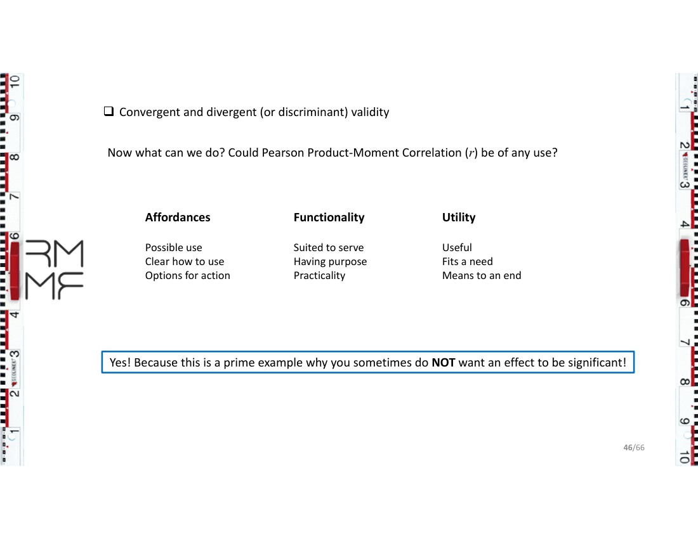
聚合效度（Convergent validity）与区分效度（divergent (or discriminant) validity）
现在我们能做什么？皮尔逊积矩相关（Pearson Product-Moment Correlation (r)）能派上用场吗？
- 可供性（Affordances）
- 可能的用途（Possible use）
- 清楚如何使用（Clear how to use）
- 行动选项（Options for action）
- 功能性（Functionality）
- 适合服务于目标（Suited to serve）
- 具有目的性（Having purpose）
- 实用性（Practicality）
- 效用性（Utility）
- 有用的（Useful）
- 满足需求（Fits a need）
- 实现目的的手段（Means to an end）
是的！因为这是一个绝佳的例子，说明为什么你有时并不希望某个效应（effect）是显著（significant）的！
英文检索原文（公式与版式请看左侧原图）
Convergent and divergent (or discriminant) validity Now what can we do? Could Pearson Product-Moment Correlation (r) be of any use? Affordances Possible use Clear how to use Options for action Functionality Suited to serve Having purpose Practicality Utility Useful Fits a need Means to an end Yes! Because this is a prime example why you sometimes do NOT want an effect to be significant! 46/66

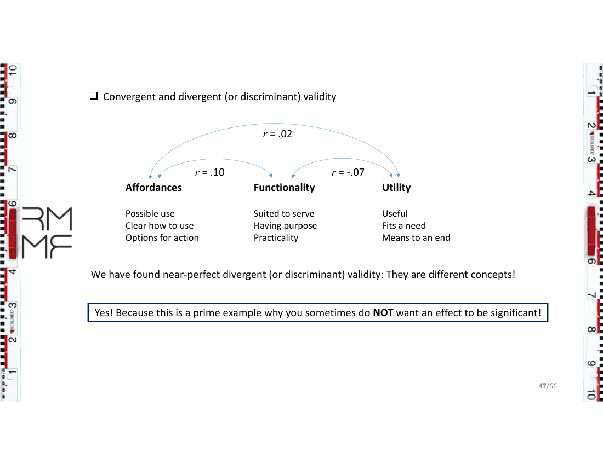
聚合效度（Convergent validity）与区分效度（divergent (or discriminant) validity）
- 可供性（Affordances）
- 可能的用途（Possible use）
- 清楚如何使用（Clear how to use）
- 行动选项（Options for action）
- 功能性（Functionality）
- 适合服务于目标（Suited to serve）
- 具有目的性（Having purpose）
- 实用性（Practicality）
- 效用性（Utility）
- 有用的（Useful）
- 满足需求（Fits a need）
- 实现目的的手段（Means to an end）
- 相关系数（r） 值：
- r = .02
- r = .10
- r = -.07
是的！因为这是一个绝佳的例子，说明为什么你有时并不希望某个效应（effect）是显著（significant）的！
我们发现了近乎完美的区分效度（divergent (or discriminant) validity）：它们是不同的概念！
英文检索原文（公式与版式请看左侧原图）
Convergent and divergent (or discriminant) validity Affordances Possible use Clear how to use Options for action Functionality Suited to serve Having purpose Practicality Utility Useful Fits a need Means to an end Yes! Because this is a prime example why you sometimes do NOT want an effect to be significant! r = .02 r = .10 r = -.07 We have found near-perfect divergent (or discriminant) validity: They are different concepts! 47/66

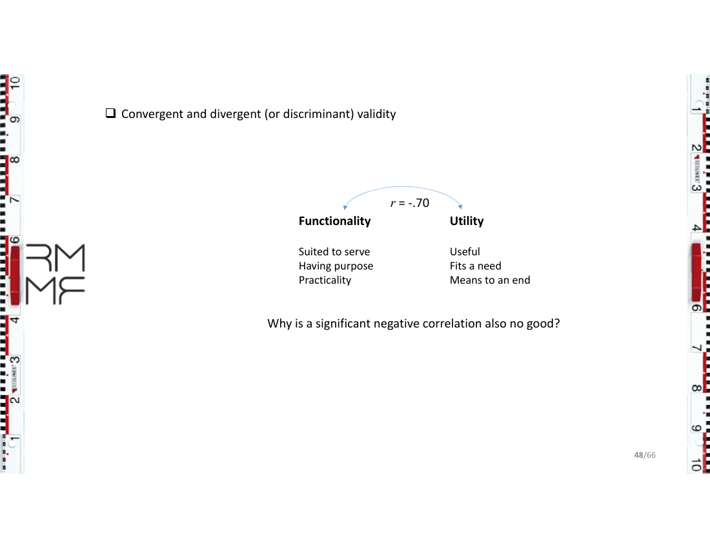
聚合效度与区分（或判别）效度（Convergent and divergent (or discriminant) validity）
- 功能性（Functionality）
- 适用有效（Suited to serve）
- 具有目的性（Having purpose）
- 实用性（Practicality）
- 效用性（Utility）
- 有用（Useful）
- 满足需求（Fits a need）
- 达成目的的手段（Means to an end）
相关系数（r） = -.70
为什么显著负相关（significant negative correlation）也不好？
英文检索原文（公式与版式请看左侧原图）
Convergent and divergent (or discriminant) validity Functionality Suited to serve Having purpose Practicality Utility Useful Fits a need Means to an end r = -.70 Why is a significant negative correlation also no good? 48/66

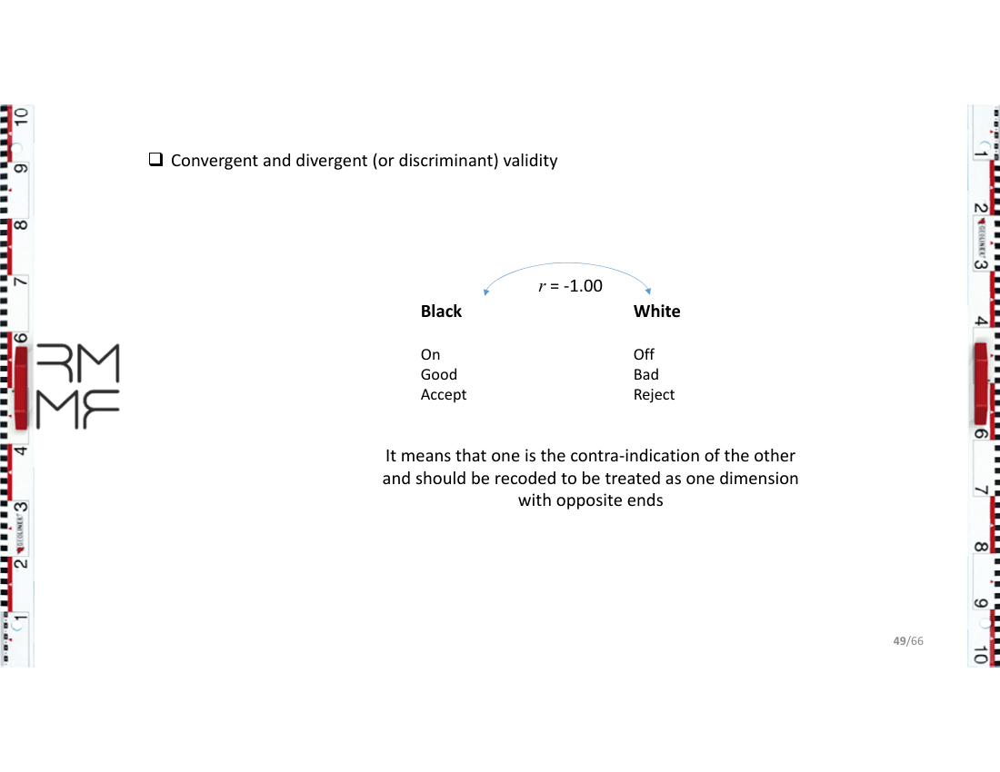
聚合效度与区分（或判别）效度（Convergent and divergent (or discriminant) validity）
- 黑（Black）
- 开（On）
- 好（Good）
- 接受（Accept）
- 白（White）
- 关（Off）
- 坏（Bad）
- 拒绝（Reject）
相关系数（r） = -1.00
这意味着其中一个是另一个的反指示（contra-indication），应当进行重新编码（recoded），将其视为具有相反两端的同一个维度（dimension）。
英文检索原文（公式与版式请看左侧原图）
Convergent and divergent (or discriminant) validity Black On Good Accept White Off Bad Reject r = -1.00 It means that one is the contra-indication of the other and should be recoded to be treated as one dimension with opposite ends 49/66

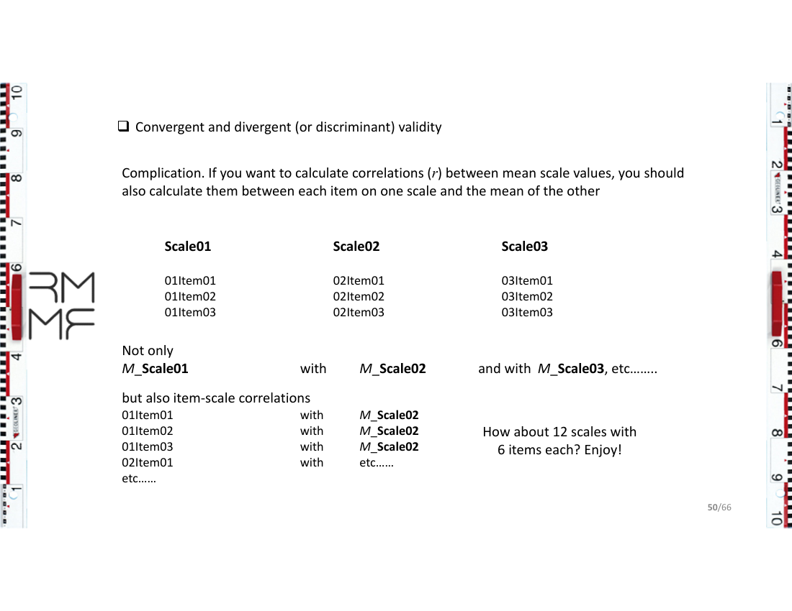
聚合效度与区分（或判别）效度（Convergent and divergent (or discriminant) validity）
复杂之处在于：如果你想计算各量表均值（mean scale values）之间的相关系数（correlations (r)），你还应该计算一个量表（scale）上的每一个题项（item）与另一个量表均值之间的相关。
- Scale01（量表 01）：01Item01、01Item02、01Item03
- Scale02（量表 02）：02Item01、02Item02、02Item03
- Scale03（量表 03）：03Item01、03Item02、03Item03
不仅要计算 M_Scale01 与 M_Scale02 以及与 M_Scale03 等之间的相关……
还要计算题项—量表相关（item-scale correlations）：
01Item01与M_Scale0201Item02与M_Scale0201Item03与M_Scale0202Item01与…… 等……
要是有 12 个量表（scales）、每个包含 6 个题项（items）呢？慢慢算吧！
英文检索原文（公式与版式请看左侧原图）
Convergent and divergent (or discriminant) validity Complication. If you want to calculate correlations (r) between mean scale values, you should also calculate them between each item on one scale and the mean of the other Scale01 01Item01 01Item02 01Item03 Scale02 02Item01 02Item02 02Item03 Scale03 03Item01 03Item02 03Item03 Not only M_Scale01 with M_Scale02 and with M_Scale03, etc…….. but also item-scale correlations 01Item01 with M_Scale02 01Item02 with M_Scale02 01Item03 with M_Scale02 02Item01 with etc…… etc…… How about 12 scales with 6 items each? Enjoy! 50/66

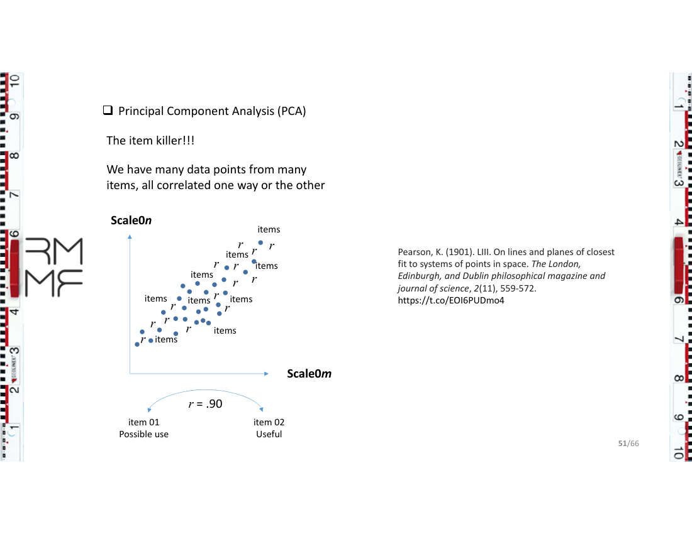
题项（item）杀手！！！
- 主成分分析（Principal Component Analysis (PCA)）
图示标签：Scale0n、Scale0m、题项（items）、相关系数（r）
我们拥有来自许多题项（items）的大量数据点（data points），它们都在某种程度上彼此相关（correlated）
- item 01（题项 01）：可能用途（Possible use）
- item 02（题项 02）：有用（Useful）
- 相关系数（r） = .90
参考文献：
Pearson, K. (1901). LIII. On lines and planes of closest fit to systems of points in space. The London, Edinburgh, and Dublin philosophical magazine and journal of science, 2(11), 559-572. https://t.co/EOI6PUDmo4
英文检索原文（公式与版式请看左侧原图）
The item killer!!! Principal Component Analysis (PCA) Scale0n Scale0m items items items items items items items items items r r r r r r r r r r r r r We have many data points from many items, all correlated one way or the other r item 01 Possible use item 02 Useful r = .90 Pearson, K. (1901). LIII. On lines and planes of closest fit to systems of points in space. The London, Edinburgh, and Dublin philosophical magazine and journal of science, 2(11), 559-572. https://t.co/EOI6PUDmo4 51/66

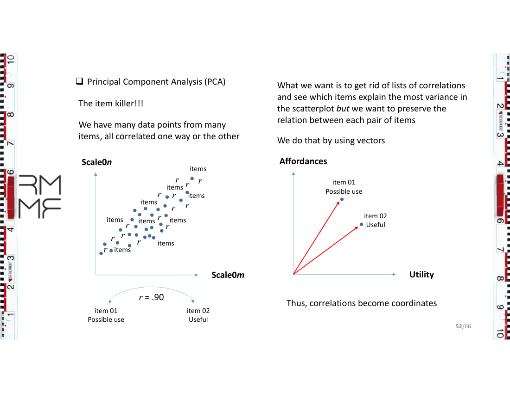
题项（item）杀手！！！
- 主成分分析（Principal Component Analysis (PCA)）
图示标签：Scale0n、Scale0m、题项（items）、相关系数（r）
我们拥有来自许多题项（items）的大量数据点（data points），它们都在某种程度上彼此相关（correlated）
我们想要做的是摆脱一长串的相关（correlations）列表，看看哪些题项（items）在散点图（scatterplot）中解释了最多的方差（variance），同时我们又希望保留每对题项之间的关系。
我们通过使用向量（vectors）来实现这一点。
- item 01（题项 01）：可能用途（Possible use）
- item 02（题项 02）：有用（Useful）
- 相关系数（r） = .90
坐标系图示标签：可供性（Affordances）、效用性（Utility）、item 01（可能用途）、item 02（有用）
因此，相关（correlations）变成了坐标（coordinates）。
英文检索原文（公式与版式请看左侧原图）
The item killer!!! Principal Component Analysis (PCA) Scale0n Scale0m items items items items items items items items items r r r r r r r r r r r r r We have many data points from many items, all correlated one way or the other r What we want is to get rid of lists of correlations and see which items explain the most variance in the scatterplot but we want to preserve the relation between each pair of items We do that by using vectors item 01 Possible use item 02 Useful r = .90 Affordances Utility item 01 Possible use item 02 Useful Thus, correlations become coordinates 52/66

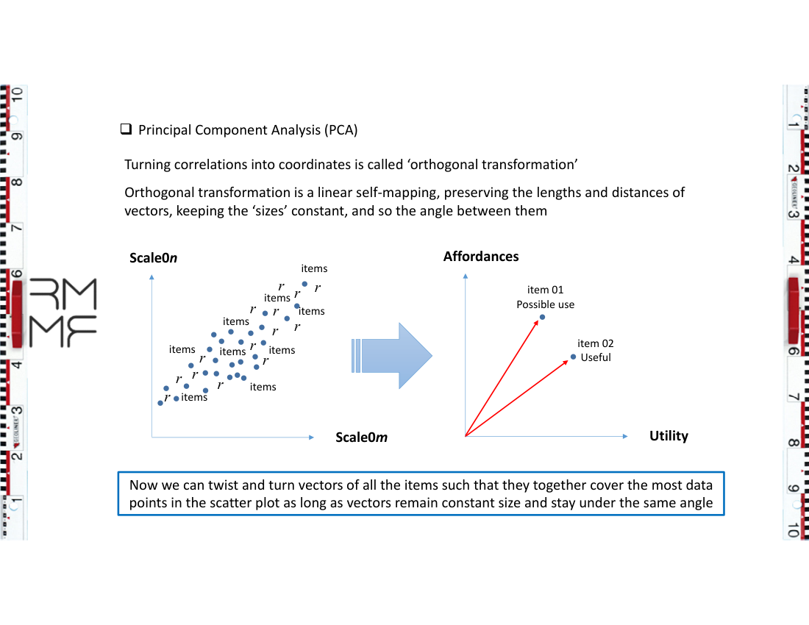
主成分分析（Principal Component Analysis (PCA)）
图示标签：Scale0n、Scale0m、题项（items）、相关系数（r）
坐标系图示标签：可供性（Affordances）、效用性（Utility）、item 01（可能用途）、item 02（有用）
将相关（correlations）转化为坐标（coordinates）被称为“正交变换（orthogonal transformation）”。
正交变换（Orthogonal transformation）是一种线性自映射（linear self-mapping），它保留向量（vectors）的长度与距离，使“大小”保持不变，从而也保持它们之间的夹角（angle）不变。
现在我们可以扭转和旋转所有题项（items）的向量（vectors），只要这些向量保持大小恒定且处于相同的夹角（angle）下，使它们共同覆盖散点图（scatter plot）中最多的数据点（data points）。
英文检索原文（公式与版式请看左侧原图）
Principal Component Analysis (PCA) Scale0n Scale0m items items items items items items items items items r r r r r r r r r r r r r r Affordances Utility item 01 Possible use item 02 Useful Turning correlations into coordinates is called ‘orthogonal transformation’ Orthogonal transformation is a linear self-mapping, preserving the lengths and distances of vectors, keeping the ‘sizes’ constant, and so the angle between them Now we can twist and turn vectors of all the items such that they together cover the most data points in the scatter plot as long as vectors remain constant size and stay under the same angle

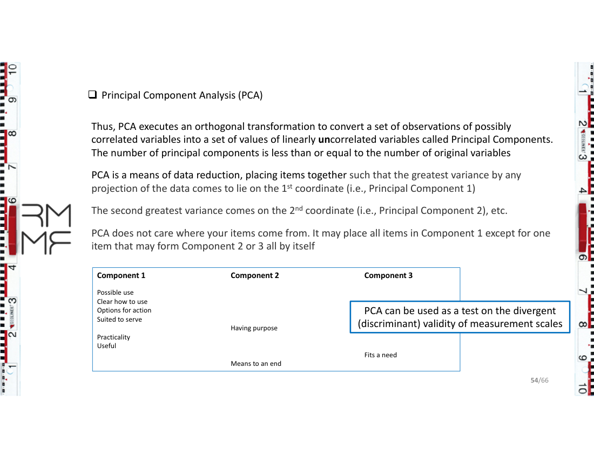
主成分分析（Principal Component Analysis (PCA)）
因此，主成分分析（PCA） 执行一种正交变换（orthogonal transformation），将一组可能存在相关的变量（variables）的观测值（observations）转换为一组线性不相关变量（linearly uncorrelated variables）的值，这些新变量称为主成分（Principal Components）。主成分（principal components）的数量少于或等于原始变量（original variables）的数量。
主成分分析（PCA） 是一种数据降维（data reduction）方法，它将题项（items）组合在一起，使得数据在任意投影方向上的最大方差（variance）落在第 1 个坐标轴（coordinate）上（即主成分 1（Principal Component 1））。
第二大的方差（variance）落在第 2 个坐标轴（coordinate）上（即主成分 2（Principal Component 2）），依此类推。
主成分分析（PCA） 并不关心你的题项（items）来自哪里。它可能会把所有题项都放进成分 1（Component 1），唯独留下一个题项单独构成成分 2（Component 2） 或成分 3（Component 3）。
- 成分 1（Component 1）
- 成分 2（Component 2）
- 成分 3（Component 3）
图示题项列表：
- 可能用途（Possible use）
- 使用方法清晰（Clear how to use）
- 行动选项（Options for action）
- 适用有效（Suited to serve）
- 具有目的性（Having purpose）
- 实用性（Practicality）
- 有用（Useful）
- 满足需求（Fits a need）
- 达成目的的手段（Means to an end）
主成分分析（PCA） 可以用作对测量量表（measurement scales）的区分效度（divergent (discriminant) validity）的检验。
英文检索原文（公式与版式请看左侧原图）
Principal Component Analysis (PCA) Thus, PCA executes an orthogonal transformation to convert a set of observations of possibly correlated variables into a set of values of linearly uncorrelated variables called Principal Components. The number of principal components is less than or equal to the number of original variables PCA is a means of data reduction, placing items together such that the greatest variance by any projection of the data comes to lie on the 1st coordinate (i.e., Principal Component 1) The second greatest variance comes on the 2nd coordinate (i.e., Principal Component 2), etc. PCA does not care where your items come from. It may place all items in Component 1 except for one item that may form Component 2 or 3 all by itself Component 1 Component 2 Component 3 Possible use Clear how to use Options for action Suited to serve Having purpose Practicality Useful Fits a need Means to an end PCA can be used as a test on the divergent (discriminant) validity of measurement scales 54/66

因此，成分 1（Component 1） 解释了数据中尽可能多的变异性（variability），而随后的每一个成分（component）都尽可能多地解释剩余的变异性（variability）。
主成分分析（PCA） 在统计学（statistics）中有多种用途：
- 降维（Dimensionality reduction）：在保留大部分原始变异性（variability）的同时减少变量（variables）的数量
- 数据压缩（Data compression）：使数据更易于探索和可视化
- 特征提取（Feature extraction）：创建可用于后续分析（例如机器学习（Machine Learning））的新不相关变量（uncorrelated variables）
- 降噪（Noise reduction）：通过捕捉数据中的主要方差（main variance），PCA 可以帮助识别并丢弃噪声（noise）
- 多元数据分析（Multivariate data analysis）：理解高维数据（high-dimensional data）的结构
主成分分析（Principal Component Analysis (PCA)）
- 主成分（principal components）代表了数据中使方差（variance）最大化的方向（即“最重要”的方向）
- 与每个主成分（principal component）相关联的特征值（eigenvalues）表示该成分所解释的方差（variance）大小
- 载荷（loadings）（线性组合（linear combination）的系数）可以解释为每个标准化原始变量（standardized original variable）在计算成分得分（component score）时所需乘以的权重（weights）
英文检索原文（公式与版式请看左侧原图）
Thus, Component 1 accounts for as much of the variability in the data as possible, and each succeeding component accounts for as much of the remaining variability as possible PCA is used for several purposes in statistics: Dimensionality reduction: Reducing the number of variables while retaining most of the original variability Data compression: Making data easier to explore and visualize Feature extraction: Creating new uncorrelated variables that can be used in subsequent analysis (i.e., Machine Learning) Noise reduction: By capturing the main variance in the data, PCA can help to identify and discard noise Multivariate data analysis: Understanding the structure of high-dimensional data Principal Component Analysis (PCA) The principal components represent the directions in the data that maximize variance (i.e., the “most important“ directions) The eigenvalues associated with each principal component indicate the amount of variance accounted for by that component The loadings (the coefficients of the linear combination) can be interpreted as the weights by which each standardized original variable should be multiplied to get the component score 55/66

主成分分析（PCA） 对原始变量（original variables）的相对尺度（relative scaling）很敏感，因此如果变量是在不同量表（scales）上测量的，在应用 PCA 之前通常会对数据进行标准化（standardized）（例如转换为 Z 分数标准化（z-scored））。
主成分分析（Principal Component Analysis (PCA)）
什么是 Z 分数（z-scores）？它们的作用是使不同的测量指标（measures）具有可比性。
例如，一个 6 点评分量表（6-point rating scale） 和一个 1 到 10 分的学校成绩。
或者，一个反应时（reaction time）和一个错误率（error rate）。
公式图示标签：
- 原始分数（Raw score）
- 总体均值（Population mean）
- 总体标准差（Population standard deviation）
为什么我们需要校准（calibrate）
英文检索原文（公式与版式请看左侧原图）
PCA is sensitive to the relative scaling of the original variables, so data are usually standardized (e.g., z-scored) before applying PCA if the variables are measured on different scales Principal Component Analysis (PCA) What are z-scores? They are there to make different measures comparable For instance, a 6-point rating scale and a school mark 1 to 10 Or, a reaction time and an error rate Raw score Population mean Population standard deviation 56/66 Why we need to calibrate

主成分分析（PCA） 的起源通常归功于 Karl Pearson，后来由 Harold Hotelling (1933) 进一步发展与扩展，并由他引入了“主成分（principal component）”这一术语。
Hotelling, H. (1933). Analysis of a complex of statistical variables into principal components. Journal of educational psychology, 24(6), 417-441. doi: 10.1037/h0071325
英文检索原文（公式与版式请看左侧原图）
The origins of PCA are often attributed to Karl Pearson, later developed and extended by Harold Hotelling (1933), introducing the term “principal component“ Hotelling, H. (1933). Analysis of a complex of statistical variables into principal components. Journal of educational psychology, 24(6), 417-441. doi: 10.1037/h0071325 57/66

要在 SPSS 中运行双变量皮尔逊相关（bivariate Pearson Correlation）或斯皮尔曼相关（Spearman）相关，请点击 Analyze（分析）> Correlate（相关）> Bivariate（双变量）。随后会打开 Bivariate Correlations（双变量相关）窗口，你可以在其中指定要用于分析的变量（variables）。
https://libguides.library.kent.edu/SPSS/PearsonCorr#:~:text=To%20run%20a%20bivariate%20Pearson,list%20on%20the%20left%20side.
英文检索原文（公式与版式请看左侧原图）
To run a bivariate Pearson Correlation or Spearman in SPSS, click Analyze > Correlate > Bivariate. The Bivariate Correlations window opens, where you will specify the variables to be used in the analysis https://libguides.library.kent.edu/SPSS/PearsonCorr#:~:text=To%20run%20a%20bivariate%20Pearson,list%20on%20the%20left%20side. 58/66

主成分分析（Principal Component Analysis）
本页为 SPSS 操作界面截图，演示主成分分析的设置路径与参数：
- 菜单路径：Analyze（分析）> Dimension Reduction（降维）> Factor...（因子（Factor）...）
- 因子分析（Factor Analysis） 对话框：
- 左侧变量列表（
VAR00001、VAR00002、VAR00003）移入Variables:（变量（Variables））栏；下方为Selection Variable:（选择变量）及Value...（值） - 右侧选项按钮：
Descriptives...（描述统计（Descriptives））、Extraction...（因子提取（Extraction））、Rotation...（因子旋转（Rotation））、Scores...（因子得分（Scores））、Options...（选项） - 底部按钮：
OK（确定）、Paste（粘贴）、Reset（重置）、Cancel（取消）
- 左侧变量列表（
- 因子分析：提取（Factor Analysis: Extraction） 子对话框：
Method:（方法）：选择Principal components（主成分（Principal components））Analyze（分析）：选中Correlation matrix（相关矩阵（Correlation matrix））；未选Covariance matrix（协方差矩阵（Covariance matrix））Display（显示）：勾选Unrotated factor solution（未旋转因子解（Unrotated factor solution））；未勾选Scree plot（碎石图（Scree plot））Extract（提取）：选中Based on Eigenvalue（基于特征值（Eigenvalue）），Eigenvalues greater than:（特征值大于）设为1；未选Fixed number of factors（固定因子数），Factors to extract:（要提取的因子数）留空Maximum Iterations for Convergence:（收敛最大迭代次数（Maximum Iterations for Convergence））：25- 底部按钮：
Continue（继续）、Cancel（取消）、Help（帮助）
英文检索原文（公式与版式请看左侧原图）
59/66 Principal Component Analysis

总结（∑ummary）
Socrates
- 相关（Correlations）：我们已经看到，相关表明事件或数据点（data points）之间存在关联（associated），但并不说明这种关系的性质
- 由于相关很容易建立，伪相关（spurious correlations）也可能是显著的（significant）（比如骰子恰好连续掷出 6 次 6 点），但在实证（empirically）上，这毫无意义
- 皮尔逊积矩相关（Pearson Product-Moment Correlation (r)）是最常用的方法，用于评估在某一维度（dimension）上的相关程度，也可用于表明数据点之间不相关（例如作为控制（control），或用于检验区分效度（discriminant validity））
- 科恩 kappa（Cohen’s kappa (κ)）和克里彭多夫 alpha（Krippendorff’s alpha (α)）通常用于检验评分者间信度（inter-rater reliabilities）（例如在内容分析（content analysis）中）
英文检索原文（公式与版式请看左侧原图）
ummary Socrates 60/66 Correlations. We have seen that they indicate events or data points that are associated, but do not say anything about the nature of that relationship Because correlations are easily established, spurious correlations may be significant (the dice just rolled 6 times 6) but empirically, that means nothing Pearson Product-Moment Correlation (r) is the most common, used to assess the degree of relatedness on some dimension but also to show that data points are unrelated (e.g., as control, or for discriminant validity) Cohen’s kappa (κ) and Krippendorff’s alpha () are typically for testing inter-rater reliabilities (e.g., in content analysis)

总结（∑ummary）
Socrates
- 克龙巴赫 α（Cronbach’s α）用于评估心理测量量表（psychometric measurement scale）上题项（items）的信度（reliability）（聚合效度（convergent validity））（题项数应 ≥ 3，信度的临界值（cut-off point）通常为 α > .70）
- 斯皮尔曼-布朗系数 ρ（分半）（Spearman-Brown coefficient ρ (split-half)）具有相同用途，但适用于题项数 = 2 的情况
- 斯皮尔曼 rho（ρ）（等级顺序）（Spearman’s rho (ρ) (rank order)）用于比较至少在顺序量表（ordinal scale）上测量的项目列表（例如年度大学排名）
- 聚合效度（Convergent validity）说明题项在多大程度上指向同一个构念（construct）；区分效度（divergent validity）说明（另一个量表的）题项在多大程度上指向不同的构念（constructs）
- 主成分分析（Principal Component Analysis (PCA)）可用于衡量区分（或判别）效度（divergent (or discriminant) validity）（不过不显著（insignificant）的皮尔逊 r（Pearson’s r）也能起到同样作用）
英文检索原文（公式与版式请看左侧原图）
Socrates ummary Cronbach’s is to evaluate the reliability (convergent validity) of the items on a psychometric measurement scale (#items should be ≥ 3, cut-off point for reliability usually > .70) Spearman-Brown coefficient ρ (split-half) serves the same purpose but for #items = 2 Spearman’s rho (ρ) (rank order) is to compare lists of items that at least are measured on an ordinal scale (e.g., annual university rankings) Convergent validity tells in how far items indicate the same construct; divergent validity tells in how far items (of another scale) indicate different constructs Principal Component Analysis (PCA) can be used to gauge divergent (or discriminant) validity (but insignificant Pearson’s r would also do the trick)

考试样题（Exam Sample Item）
类别：“洞察”（Category “Insight”）
- 肥胖（Obesity）
- 癌症（Cancer）
- 糖摄入量（而非脂肪）（Sugar intake (not fat)）
在第 7 讲《相关（Correlations）》（Lecture 07: Correlations）中，我们讨论了肥胖与癌症之间的共现（co-occurrence）现象，并指出两者都是同一个根本原因（root cause）——糖摄入量——所导致的结果。你认为除了肥胖与癌症之间存在相关外，糖摄入量本身是否也与这两种疾病相关（correlated），还是说糖仅仅是这两者的原因（cause）？
A. 糖必然与它们相关（correlated），因为这种关系是因果关系（causal）
B. 因果关系（Causation）不同于相关（correlation）。糖是根本原因（root cause），因此是不相关（uncorrelated）的
C. 需要更多数据。数据越多，就越容易出现显著相关（significant correlations）
D. 无稽之谈。在这个案例中，并未确立变量间的相互依存关系（interdependence of variable quantities）
英文检索原文（公式与版式请看左侧原图）
Exam Sample Item Category “Insight“ Obesity Cancer Sugar intake (not fat) In Lecture 07: Correlations, a co-occurrence between Obesity and Cancer was considered, stating that both were the result of the same root cause: sugar intake. Would you say that apart from Obesity and Cancer, Sugar intake is also correlated to the two diseases or is Sugar merely the cause of the two? A Sugar must be correlated because the relationship is causal B Causation is not the same as correlation. Sugar is the root cause and therefore, uncorrelated C More data are needed. With more data, significant correlations are likelier to occur D Nonsense. In this case, interdependence of variable quantities was not established 62/66

考试样题（Exam Sample Item）
类别：“洞察”（Category “Insight”）
- 肥胖（Obesity）
- 癌症（Cancer）
- 糖摄入量（而非脂肪）（Sugar intake (not fat)）
在第 7 讲《相关（Correlations）》（Lecture 07: Correlations）中，我们讨论了肥胖与癌症之间的共现（co-occurrence）现象，并指出两者都是同一个根本原因（root cause）——糖摄入量——所导致的结果。你认为除了肥胖与癌症之间存在相关外，糖摄入量本身是否也与这两种疾病相关（correlated），还是说糖仅仅是这两者的原因（cause）？
A. 糖必然与它们相关（correlated），因为这种关系是因果关系（causal）
B. 因果关系（Causation）不同于相关（correlation）。糖是根本原因（root cause），因此是不相关（uncorrelated）的
C. 需要更多数据。数据越多，就越容易出现显著相关（significant correlations）
D. 无稽之谈。在这个案例中，并未确立变量间的相互依存关系（interdependence of variable quantities）
英文检索原文（公式与版式请看左侧原图）
Exam Sample Item Category “Insight“ Obesity Cancer Sugar intake (not fat) In Lecture 07: Correlations, a co-occurrence between Obesity and Cancer was considered, stating that both were the result of the same root cause: sugar intake. Would you say that apart from Obesity and Cancer, Sugar intake is also correlated to the two diseases or is Sugar merely the cause of the two? A Sugar must be correlated because the relationship is causal B Causation is not the same as correlation. Sugar is the root cause and therefore, uncorrelated C More data are needed. With more data, significant correlations are likelier to occur D Nonsense. In this case, interdependence of variable quantities was not established 63/66

考试样题（Exam Sample Item）
类别：“应用”（Category “Application”）
在第 7 讲《相关（Correlations）》（Lecture 07: Correlations）中，斯皮尔曼-布朗系数 ρ（分半）（Spearman-Brown coefficient ρ (split-half)）可用于检验一个两题项心理测量量表（psychometric scale）的平均分（mean scores (M)）的信度（reliability）。在该例子中，正指示题项（indicative item）的平均分为 M = 5，而反指示题项（counter-indicative item）的平均分为 M = 0。分半法（split-half）会认为这个两题项量表可靠（reliable）吗？为什么？
- 统计学很有趣（Statistics is engaging）：不同意（disagree） 0—1—2—3—4—5 同意（agree）
- 统计学很无聊（Statistics is boring）：不同意（disagree） 0—1—2—3—4—5 同意（agree）
A. 这两个题项的平均值（averages）完全相反，因此存在完全的不一致（misalignment）
B. 可靠（Reliable）。应当对反指示题项（contra-indication）进行重新编码（recode），之后分数就会匹配
C. 不可靠（Unreliable）。该量表（scale）的心理学含义极具争议
D. M = 5 与 M = 0 得出的总均值（grand mean）为 GM = 2.5，量表中点（scale midpoint） = 中立（neutral），因此相关（correlation）为 0
英文检索原文（公式与版式请看左侧原图）
In Lecture 07: Correlations, Spearman-Brown coefficient ρ (split-half) can be used to test the reliability of the mean scores (M) to a 2-item psychometric scale. In the example, the average scores to the indicative item were M = 5 and to the counter-indicative item M = 0. Would split-half say this 2-item scale is reliable? Why? Statistics is engaging disagree 0—1—2—3—4—5 agree Statistics is boring disagree 0—1—2—3—4—5 agree A The two items show opposite averages, so there is perfect misalignment B Reliable. One should recode the contra-indication and then scores match C Unreliable. The psychological meaning of this scale is highly controversial D M = 5 and M = 0 gives a grand mean of GM = 2.5, scale midpoint = neutral, so the correlation is 0 Exam Sample Item Category “Application“ 64/66

考试样题（Exam Sample Item）
类别：“应用”（Category “Application”）
在第 7 讲《相关（Correlations）》（Lecture 07: Correlations）中，斯皮尔曼-布朗系数 ρ（分半）（Spearman-Brown coefficient ρ (split-half)）可用于检验一个两题项心理测量量表（psychometric scale）的平均分（mean scores (M)）的信度（reliability）。在该例子中，正指示题项（indicative item）的平均分为 M = 5，而反指示题项（counter-indicative item）的平均分为 M = 0。分半法（split-half）会认为这个两题项量表可靠（reliable）吗？为什么？
- 统计学很有趣（Statistics is engaging）：不同意（disagree） 0—1—2—3—4—5 同意（agree）
- 统计学很无聊（Statistics is boring）：不同意（disagree） 0—1—2—3—4—5 同意（agree）
A. 这两个题项的平均值（averages）完全相反，因此存在完全的不一致（misalignment）
B. 可靠（Reliable）。应当对反指示题项（contra-indication）进行重新编码（recode），之后分数就会匹配
C. 不可靠（Unreliable）。该量表（scale）的心理学含义极具争议
D. M = 5 与 M = 0 得出的总均值（grand mean）为 GM = 2.5，量表中点（scale midpoint） = 中立（neutral），因此相关（correlation）为 0
英文检索原文（公式与版式请看左侧原图）
In Lecture 07: Correlations, Spearman-Brown coefficient ρ (split-half) can be used to test the reliability of the mean scores (M) to a 2-item psychometric scale. In the example, the average scores to the indicative item were M = 5 and to the counter-indicative item M = 0. Would split-half say this 2-item scale is reliable? Why? Statistics is engaging disagree 0—1—2—3—4—5 agree Statistics is boring disagree 0—1—2—3—4—5 agree A The two items show opposite averages, so there is perfect misalignment B Reliable. One should recode the contra-indication and then scores match C Unreliable. The psychological meaning of this scale is highly controversial D M = 5 and M = 0 gives a grand mean of GM = 2.5, scale midpoint = neutral, so the correlation is 0 Exam Sample Item Category “Application“ 65/66

参考文献（References）
- Brown, W. (1910). Some experimental results in the correlation of mental abilities 1. British Journal of Psychology, 1904-1920, 3(3), 296-322.
- Cohen, J. (1960). A coefficient of agreement for nominal scales. Educational and psychological measurement, 20(1), 37-46.
- Cronbach, L. J. (1951). Coefficient alpha and the internal structure of tests. Psychometrika, 16, 297-334. doi: 10.1007/BF02310555
- Hotelling, H. (1933). Analysis of a complex of statistical variables into principal components. Journal of educational psychology, 24(6), 417-441. doi: 10.1037/h0071325
- Krippendorff, K. (1970). Estimating the reliability, systematic error and random error of interval data. Educational and psychological measurement, 30(1), 61-70.
- Krippendorff, K. (2018). Content analysis: An introduction to its methodology. New York: Sage.
- Pearson, K. (1901). LIII. On lines and planes of closest fit to systems of points in space. The London, Edinburgh, and Dublin philosophical magazine and journal of science, 2(11), 559-572. https://t.co/EOI6PUDmo4
- Pearson, K. (1904). On the theory of contingency and its relation to association and normal correlation. London: Cambridge University.
- Spearman, C. (1904). The proof and measurement of association between two things. The American Journal of Psychology, 15(1), 72-101. doi: 10.2307/1412159
- Spearman, C. (1910). Correlation calculated from faulty data. British journal of psychology, 3(3), 271.
英文检索原文（公式与版式请看左侧原图）
References Brown, W. (1910). Some experimental results in the correlation of mental abilities 1. British Journal of Psychology, 1904-1920, 3(3), 296-322. Cohen, J. (1960). A coefficient of agreement for nominal scales. Educational and psychological measurement, 20(1), 37- 46. Cronbach, L. J. (1951). Coefficient alpha and the internal structure of tests. Psychometrika, 16, 297-334. doi: 10.1007/BF02310555 Hotelling, H. (1933). Analysis of a complex of statistical variables into principal components. Journal of educational psychology, 24(6), 417-441. doi: 10.1037/h0071325 Krippendorff, K. (1970). Estimating the reliability, systematic error and random error of interval data. Educational and psychological measurement, 30(1), 61-70. Krippendorff, K. (2018). Content analysis: An introduction to its methodology. New York: Sage. Pearson, K. (1901). LIII. On lines and planes of closest fit to systems of points in space. The London, Edinburgh, and Dublin philosophical magazine and journal of science, 2(11), 559-572. https://t.co/EOI6PUDmo4 Pearson, K. (1904). On the theory of contingency and its relation to association and normal correlation. London: Cambridge University. Spearman, C. (1904). The proof and measurement of association between two things. The American Journal of Psychology, 15(1), 72-101. doi: 10.2307/1412159 Spearman, C. (1910). Correlation calculated from faulty data. British journal of psychology, 3(3), 271.